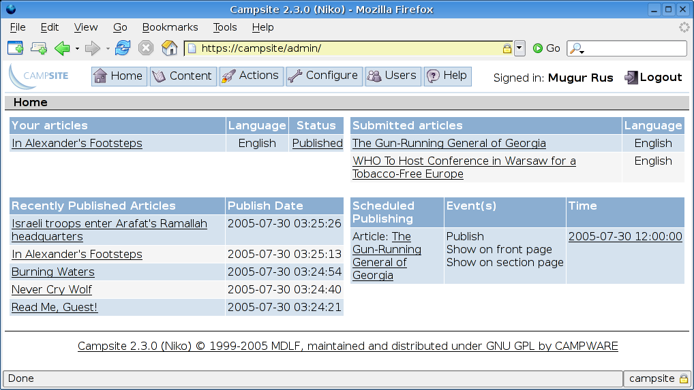
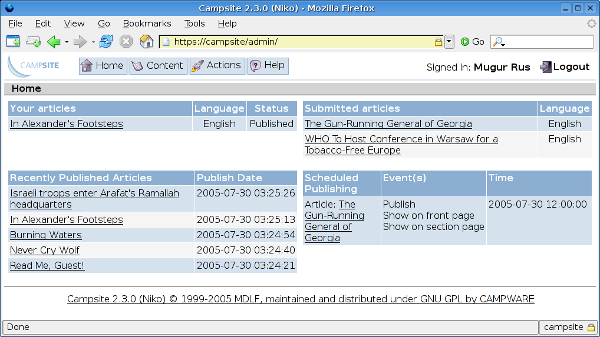
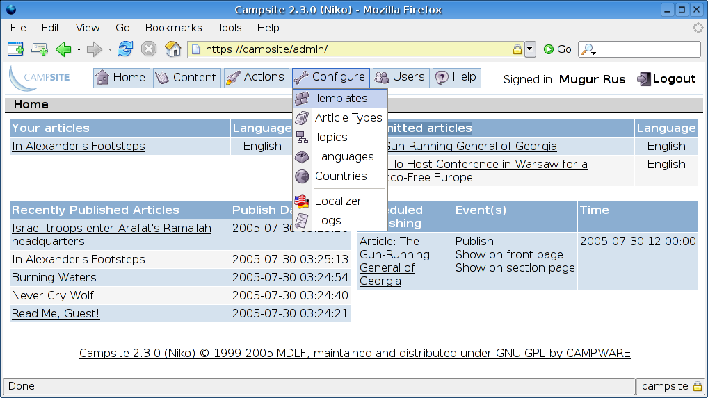
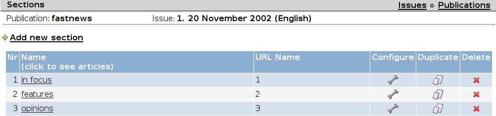
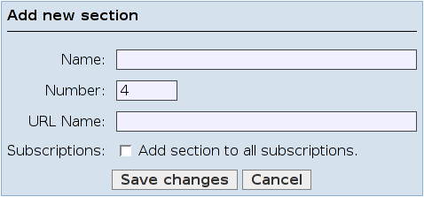
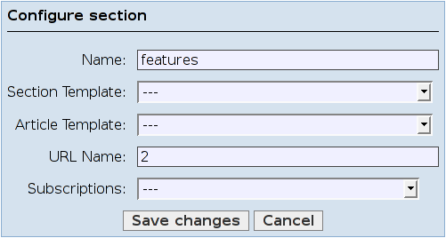

3. Campsite: the Content menu
Campsite
User Guide
Campsite version: 2.3.0 and newer versions
Maintained and distributed under GNU/GPL by CAMPWARE http://www.campware.org
Manual version: August 1, 2005
Language: English
©1999-2005 Media Development Loan Fund
http://www.mdlf.org - http://www.mdlf-camp.net
Table of Contents
1.1. REQUIREMENTS AND DEPENDENCIES
1.2. TODO
1.2.1 Configure the Web server
1.2.2 Configuring Campsite to work over SSL
1.2.3 Customize the application framework
1.3 UPGRADING
1.3.1 Upgrading
from versions 2.2.x
1.3.2
Upgrading
from versions 2.1.x
1.3.3
Compatibility
issues
1.3.4 New template statements and short name URLs
1.4 ACCESSING YOUR Campsite SERVER
1.5 KNOWN ISSUES
2.2. CONFIGURING THE PUBLISHING ENVIRONMENT
2.2.1 Languages
2.2.2 Countries
2.2.3 The localizer
2.2.4 User Management
2.3. CREATING PUBLICATIONS
2.3.1 Creating a new publication
2.3.2 Creating a new issue
2.3.3 Add new sections to an issue
2.3.4 Defining article types
2.3.5 Creating articles within a section
2.3.6 Editing articles: Edit Article Details view
2.3.7 Editing body-type fields
2.3.8 Publishing articles
2.3.9 Setting the finalized publication live
2.4. TOPICS
2.5. CONFIGURING THE SUBSCRIPTION MODULE
2.5.1 Username:Password Access
2.5.2 Customizing Subscription Interface for Readers
2.5.3 IP Address-based Subscriptions
3. CREATING TEMPLATES FOR YOUR PUBLICATION
3.1. MODULAR STRUCTURE OF TEMPLATES
3.2. FIXED FRAMEWORK: COMMUNICATING WITH YOUR DATABASE
3.3. BUILDING AN ARTICLE TEMPLATE: ARTICLETEMPLATE.TPL
3.4. GENERATING A NAVIGATION TEMPLATE: NAVIGATIONTEMPLATE.TPL
3.5. BUILDING THE SECTION TEMPLATE: SECTIONTEMPLATE.TPL
3.5.1 The 'Feature' article of the section
3.5.2 Displaying only the most recent feature article on a section page
3.5.3 Including Images in the Section Listing
3.6. BUILDING THE HOME PAGE TEMPLATE: HOME.TPL
3.7. SOME HINTS: POWERFUL LISTS AND ORDERING
3.8. ENVIRONMENTAL CONTROL WITH Campsite TEMPLATES
3.8.1 Runtime parameters
3.8.2 Other parameters
3.9. STRUCTURE OF Campsite TEMPLATES
3.9.1 Language Elements. Conventions
3.9.2 'Define-environment' instructions
3.9.3 Flow control instructions
3.9.4 Printable information
4. APENDIX
I - ALPHABETIC LIST OF LANGUAGE STATEMENTS
5.
APPENDIX II -
UPGRADING FROM OLDER VERSIONS OF CAMPSITE
6.
APPENDIX III:
INSTALLING Campsite ON A STANDARD Fedora SERVER
7.
APPENDIX IV -
BACKING UP DATABASES IN MYSQL
Campsite is a multilingual content management system (CMS) for news websites. Its easily localizable user interface was built with the end user (journalist/editor/publisher) in mind and it can be configured to suit different profiles of end users – to each according his or her own technological prowess. Campsite follows the print-newspaper publishing paradigm, so it structures sites by default as Publications> Issues > Sections > Articles. Campsite works best for medium-to-large-size online news publications, but it is capable of handling nimbler sites too. Some of its main features are highly customizable user interface, total design freedom for web designers, automatic creation of archives, copy flow, and built-in subscription support.
The original Campsite concept was developed by Micz Flor and Sava Tatić for Center for Advanced Media-Prague (CAMP) in collaboration with Aleksandar Brajanoski from Transitions Online, the first site to go live on Campsite in late 2000. Developer teams at DNT-Cluj (http://www.dntcj.ro) and Recognos (http://www.recognos.com), software companies based in Cluj, Romania, wrote the original code and contributed to the development of the concept. Lucian Mureşan, Attila Egyedi, and Nenad Pandžić have contributed to the code in the past. Current core development is handled by Mugur Rus, Paul Baranowski, and Sebastian Göbel.
Campsite in action can be seen, among other locations, on the web sites of Transitions Online (http://www.tol.cz), Fluter (http://www.fluter.de), AmmanNet (http://ammannet.net), and Feral Tribune (http://www.feral.hr).
Campsite tech specs in a nutshell:
Campsite server:
runs on a GNU/Linux server, tested with Fedora 3.0 and Mandrake 10.1 and has proved compatible with RedHat 9.0, Mandrake 10.0, Debian and Ubuntu
requires a running Apache web server (and appropriately configured virtual servers).
needs a MySQL database server for Linux to be able to store data. The tests were made on MySQL v.4.0.
requires PHP (version 4.3 and up) to be running.
Campsite client side:
works in most modern Web browsers: Mozilla, Mozilla Firefox, MS Internet Explorer. No plugins are necessary as of version 2.2.0.
Campsite is a Unicode-based multilingual web content management system for news publications.
Copyright ©1999-2005 Media Development Loan Fund.
Campsite uses HTMLArea (Copyright © InteractiveTools.com and Dynarch.com, released under a BSD-style license) as its WYSYWIG editor.
Contact: http://www.campware.org
Campware encourages further development and financial contributions. Please let us know at contact@campware.org.
This program is free software; you can redistribute it and/or modify it under the terms of the GNU General Public License as published by the Free Software Foundation; either version 2 of the License, or (at your option) any later version. This program is distributed in the hope that it will be useful, but WITHOUT ANY WARRANTY; without even the implied warranty of MERCHANTABILITY or FITNESS FOR A PARTICULAR PURPOSE. See the GNU General Public License for more details.
Version 2.3.0 brings major changes to Campsite as well as critical bug fixes and many small bug fixes. Here are the highlights:
Improved user management: separation of Staff & Subscribers, ability to search users, new, easier-to-use interface, categorized user-rights list
Improved localizer: new, easier-to-use interface, ability to translate from any language to any other language, ability to change your default language, notification of missing strings, notification of unused strings
WYSIWYG Text editor: editor changed from HTMLArea to Xinha, a more dynamically supported project, added “Paste from Word” ability – will strip the MSWord styles, internal links support “target”
Online help with user comments
Show recently published articles, pending actions on the home page
Login screen remembers your previous language choice
Language names now appear in native languages in all lists
Testing checklist – a list of tests to be performed before releasing a new version
“Duplicate Section” screen usability improvements
Ability to delete all articles in a section when you delete the section
Minor versions 2.3.1, 2.3.2 etc. are mostly bug fix versions and may add some very small new features.
History of changes from 2.1.x to 2.2.x:
JavaScript-based HTMLArea has replaced the Campfire Java editor, ending Campsite's reliance on the Java VM plugin and bringing all sorts of enhancements, including full what-you-see-is-what-you-get (WYSIWYG).
a streamlined and beautified user interface
improved management of multiple instances of Campsite on a single server (new instances can be created without reinstalling Campsite)
Automatic publishing/removal of selected articles without human intervention at a specified date and time
Article ordering
New handling of Images (and other Multimedia)
Publication site aliases: aliases allow Campsite to identify a publication based on multiple domain names
Shorter, Search Engine-Friendly URLs
Campsite's parser, the heart of the application, is written in C++ and works only on Linux and FreeBSD (as of version 2.2.1). Future versions will remove the C++ dependency: the parser will be rewritten into PHP in version 2.3, but for now Linux and FreeBSD are the only platforms Campsite will work on.
To install the Campsite server, you need to have root access to a Linux server. Campsite 2.3.0 was originally developed Mandrake 10.1 and has proved compatible with Fedora 3.0, RedHat 9.0, Mandrake 10.0, Debian and Ubuntu.
Before installing Campsite, make sure you have two other applications up and running:
1. Apache web server -- your http daemon, serving your web site to the world (http://www.apache.org). You will need version 1.3.x or newer.
For installation instructions, see the Apache web site. Installing Apache will generate the httpd.conf file referred to further down. This file contains all relevant information for Apache to handle the content on your Linux server. The adjustments described below need to be made in order to tell Apache about the procedures for Campsite files and templates.
2. MySQL Database Server - this application handles the Campsite database. You will need MySQL 4.0 or newer.
Three components of MySQL are needed for Campsite:
the server
client programs
files and libraries for development
All of those can be found on the MySQL website (http://www.mysql.com).
3. PHP 4.3 or newer – this is needed for Campsite administration interface. PHP is a module for the Apache web server.
Here is what you need to do to install Campsite:
Copy the Campsite archive in a directory on the server.
Unarchive it using the command: tar xzvf <Campsite_archive>.
Enter Campsite directory.
Run './install', answer the install questions and wait for the application to be installed.
Starting from 2.2.0 the apache configuration file is automatically generated for each Campsite instance. The default directory for the instance configuration files is /usr/local/campsite/etc/[instance_name]. You can change this at install time. We will call this directory the “instance configuration directory” from now on.
The steps you need to take to configure apache for campsite are the following:
Edit the file “[instance_name]-vhost.conf” from the instance configuration directory and replace $SERVER_ADDRESS and $SERVER_NAME with the appropriate values. Your system administrator should provide the server address and server name. The server name must also be registered in the DNS (Domain Name Service).
Include the file “[instance_name]-vhost.conf” in the main apache configuration file.
Restart the apache server:
killall httpd
{PATH}/httpd
or
/etc/rc.d/init.d/httpd restart
Starting with version 2.3.0 Campsite can work over encrypted connections (SSL). This chapter will explain how to configure apache for SSL in steps.
Allocate a separate IP address for each Campsite instance you want to run over SSL. You will have to set this IP address to one of your server network interfaces. We don't provide detailed information about network interface configuration process here because it's outside the scope of Campsite. Read 'ifconfig' manual page for more details, search for “configuring network interfaces on linux” on Google or try this link: http://www.faqs.org/docs/linux_network/x-087-2-iface.html. We will refer to this IP address as [my_IP_address] in the following steps.
Locate the “Listen” directive in the main apache configuration file and add the following new lines after it if they did not exist already:
Listen 80
Listen 443
Locate the “NameVirtualHost” directive in the main apache configuration file and add the following new lines after it:
NameVirtualHost [my_IP_address]:80
NameVirtualHost [my_IP_address]:443
In case there are duplicate NameVirtualHost directives remove the duplicates.
Generate certificate and key for the SSL virtual host. We don't provide detailed information about this process here because it's outside the scope of Campsite. Read http://httpd.apache.org/docs/2.0/ssl/ssl_faq.html for details. If your apache has SSL module loaded you can skip to: “About Configuration” and “About Certificates”. This step will generate at least two files: certificate file, referred here as [certificate_file] and certificate key file, referred here as [certificate_key_file]. Install these two files into your apache certificates directory, referred here as [certificates_directory].
Edit the instance virtual host file generated by Campsite (read “1.2.1 Configure the Web server” to learn how to locate it).
Duplicate the virtual host definition in this file: copy the whole section in between <VirtualHost [...]> and </VirtualHost>, including these tags and paste it at the end of the file.
Edit the first virtual host definition and replace the existing <VirtualHost [...]> tag with:
<VirtualHost [my_IP_addresss]:80>
Edit the second virtual host definition and replace the existing <VirtualHost [...]> tag with:
<VirtualHost [my_IP_address]:443>
Edit the second virtual host definition and add the following lines into your virtual host definition:
SSLEngine on
SSLCipherSuite ALL:!ADH:!EXPORT56:RC4+RSA:+HIGH:+MEDIUM:+LOW:+SSLv2:+EXP
SSLCertificateFile [certificates_directory]/[certificate_file]
SSLCertificateKeyFile [certificates_directory]/[certificate_key_file]
Note: When generating the SSL certificate at step 4 make sure you enter the FQDN ("Fully Qualified Domain Name") of the server when OpenSSL prompts you for the "CommonName", i.e. when you generate a CSR for a website which will be later accessed via https://www.foo.dom/, enter "www.foo.dom" here. The FQDN you supply as “CommonName” must be the same as the value of “ServerName” in the Campsite instance virtual host.
The following is an example of a fully configured Campsite instance:
- main apache configuration file:
Listen 80
Listen 443
NameVirtualHost 192.168.2.101:80
NameVirtualHost 192.168.2.101:443
- Campsite instance virtual host configuration file:
<VirtualHost 192.168.2.101:80>
DocumentRoot /usr/local/campsite/www/campsite/html
ScriptAlias /cgi-bin/ /usr/local/campsite/www/campsite/cgi-bin/
ServerName www.mydomain.org
DirectoryIndex index.php index.html
<Directory /usr/local/campsite/www/campsite/html>
Options -Indexes FollowSymLinks MultiViews
AllowOverride All
<IfModule mod_access.c>
Order allow,deny
Allow from all
</IfModule>
</Directory>
<Directory /usr/local/campsite/www/campsite/cgi-bin>
AllowOverride All
Options ExecCGI
<IfModule mod_access.c>
Order allow,deny
Allow from all
</IfModule>
</Directory>
AddHandler tpl_handler .tpl
Action tpl_handler /cgi-bin/tpl_cgi
AddType application/x-httpd-php .php .wrap
</VirtualHost>
<VirtualHost 192.168.2.101:443>
DocumentRoot /usr/local/campsite/www/campsite/html
ScriptAlias /cgi-bin/ /usr/local/campsite/www/campsite/cgi-bin/
ServerName www.mydomain.org
DirectoryIndex index.php index.html
<Directory /usr/local/campsite/www/campsite/html>
Options -Indexes FollowSymLinks MultiViews
AllowOverride All
<IfModule mod_access.c>
Order allow,deny
Allow from all
</IfModule>
</Directory>
<Directory /usr/local/campsite/www/campsite/cgi-bin>
AllowOverride All
Options ExecCGI
<IfModule mod_access.c>
Order allow,deny
Allow from all
</IfModule>
</Directory>
SSLEngine on
SSLCipherSuite ALL:!ADH:!EXPORT56:RC4+RSA:+HIGH:+MEDIUM:+LOW:+SSLv2:+EXP
SSLCertificateFile /etc/apache2/ssl/server.crt
SSLCertificateKeyFile /etc/apache2/ssl/server.pem
AddHandler tpl_handler .tpl
Action tpl_handler /cgi-bin/tpl_cgi
AddType application/x-httpd-php .php .wrap
</VirtualHost>
When installing Campsite it is possible to customize certain aspects:
the default apache user/group: the administration interface scripts and template will belong to apache user/group; when creating a new instance the script will use the default values unless instructed otherwise by the user.
Campsite install directory: the default value is /usr/local/campsite
Campsite binary directory: the default value is /usr/local/campsite/bin
Campsite configuration directory: the default value is /usr/local/campsite/etc
Campsite WWW directory: the default value is /usr/local/campsite/www; this is the place where new instances will be installed.
Campsite binary directory: the default value is /usr/local/campsite/www-common; this is the place where administration interface scripts were installed.
default SMTP server address: localhost; this is the address of the email server.
default SMTP server port: 25; this is the port of the email server.
parser start port: 2000; the new instances will be assigned socket ports starting from 'start port' value + 1
The process of upgrading from Campsite 2.2.x is transparent to the user: all 2.2.x instances are upgraded automatically (including the database and code). The templates are 100% compatible. Installing Campsite 2.3.0 over an older 2.2.x version will do the upgrade without any user input.
The process of upgrading from Campsite 2.1.x to 2.3.0 is identical to the upgrade from 2.1.x to 2.2.x and is described in the following sub-chapters. For upgrading from Campsite 1.0.x or 2.0.x read “5. APPENDIX II – UPGRADING FROM OLDER VERSIONS OF CAMPSITE”.
While the 2.3.0 templates are 100% compatible with 2.2.x templates the output of article body fields changed in regard to images: the table containing the image link has the class “cs_img”, allowing the web designer to change the image layout using a CSS file. For details read “Print article” description in chapter “3.9.4.2 Print”.
The upgrade process from Campsite 2.1.x is semi-automatic; the install script does not upgrade automatically the existing older Campsite instances. The user has the choice of upgrading only the instances he/she wants. After finishing the installation of Campsite (2.2.x or 2.3.x) the user must take the following steps to upgrade an older instance:
a. Run: /usr/local/campsite/bin/create_instance --db_name [instance_name]
where [instance_name] is the name of the instance that must be upgraded.
b. Edit the file "[instance_name]-vhost.conf" from the instance configuration directory (/usr/local/campsite/etc/[instance_name]) and replace $SERVER_ADDRESS and $SERVER_NAME with the appropriate values. Your system administrator should provide the server address and server name. The server name must also be registered in the DNS (Domain Name Service).
c. Include the file "[instance_name]-vhost.conf" in the main apache configuration file and remove the old virtual host.
d. Restart the apache server:
killall httpd
{PATH}/httpd
or
/etc/rc.d/init.d/httpd restart
If you have an older installation of Campsite, either of the 1.x or 2.x branches, you'll need to upgrade the database and templates first to 2.1. For this consult Appendix II in this manual.
a. Links
Campsite 2.2.x/2.3.x does not redirect from the start URL http://[site_name] to http://[site_name]/look/[issue_template.tpl]?... Instead, it detects the last published issue and runs the issue template. For example: suppose your site name was http://test.com. In Campsite 2.1.x requesting http://test.com (URL 1) will automatically redirect you to: http://test.com/look/issue.tpl?IdLanguage=l&IdPublication=p&NrIssue=i (URL 2)
Campsite 2.2.x/2.3.x runs the issue.tpl template with the above parameters but without redirecting. This will invalidate relative links; relative links look like this:
<a href=”section.tpl?<!** urlparameters>”>text</a> (link 1)
In the case of URL 2 this link works because section.tpl template is in the same directory as issue.tpl and the new URL will look like this:
http://test.com/look/section.tpl?IdLanguage=l&IdPublication=p&NrIssue=i&NrSection=s (URL 3)
In the case of URL 1 link 1 will generate the following URL:
http://test.com/section.tpl?IdLanguage=l&IdPublication=p&NrIssue=i&NrSection=s (URL 4)
which goes nowhere since there is no section.tpl template in the root HTML directory.
The solution to this problem is to replace relative link with absolute links:
<a href=”/look/section.tpl?<!** urlparameters>”>text</a> (link 2)
or better:
<a href=”<!** print section template>?<!** urlparameters>”>text</a> (link 3)
A short term solution (in case you didn't have time to fix the links soon enough) is to replace index.php link in the HTML directory with index.php file having the following content:
<META HTTP-EQUIV="Refresh" CONTENT="0; URL=/look/issue.tpl?IdLanguage=l&IdPublication=p&NrIssue=i">
b. URL behavior in case of multiple publications
Campsite 2.2.x/2.3.x does not use the IdPublication parameter anymore. It is still printed in the URL but the part of the URL that sets the publication is the site name. That is because Campsite now supports site aliases which determine uniquely the publication. In Campsite 2.1.x the following URLs would display two different publications:
http://test.com/look/issue.tpl?IdLanguage=l&IdPublication=10&NrIssue=i (URL 5)
http://test.com/look/issue.tpl?IdLanguage=l&IdPublication=20&NrIssue=i (URL 6)
Not anymore; suppose publication 10 has the site name test.com and publication 20 has the site name second.com. URL 6 is not correct; it has to be replaced by:
http://second.com/look/issue.tpl?IdLanguage=l&IdPublication=20&NrIssue=i (URL 7)
The solution to this problem is to replace links to other publications:
<!** publication identifier 20>
<a href=”/look/issue.tpl?<!** urlparameters>”>text</a>
with:
<!** publication identifier 20>
<a href=”http://<!** print publication site>/look/issue.tpl?<!** urlparameters>”>text</a>
c. Issue templates
Campsite 2.1.x defines issue and article templates; Campsite 2.2.x/2.3.x defines one more: section template. After the upgrade the section template is set to issue template. You should edit issues and set the section template correctly. In case you have different templates for different sections you can set this at section level. This will not affect your templates if you used static links:
<a href=”/look/issue.tpl?<!** urlparameters>”>text</a>
But if you used dynamic defined links:
<a href=”<!** print issue template>?<!** urlparameters>”>text</a>
then you must take care to the template settings.
Campsite 2.2.x/2.3.x supports the following new statements: URI and URIPath. You can find the full description in chapter 3.9.4.1. These statements help you build a new type of URL: the one called short name. It comes from the fact that each issue/ section/ article has a short name. A short name based URL would look like:
http://test.com/en/may30/news/summer_is_comming
where:
test.com is the publication's site name
en is the publication's language code
may30 is the latest issue number
news is the section short name
summer_is_comming is the article short name
To produce such a link you only have to write the following:
<a href=”<!** URI>”>text</a>
This is equivalent to:
<a href=”<!** URIPath>?<!** URLParameters>”>text</a>
URIPath displays the 'path' part of the URI: /en/may30/news/summer_is_comming. URLParameters displays the rest of the parameters if any. URI combines both these statements. All these statements work for both old style URLs (named template path) and new type of URLs (named short name).
Use language, publication, issue, section and article arguments in order to specify the scope of the link. Suppose we are in the article template and we want to return to the last issue, current issue, section or article page.
<a href=”<!** URI language>”>text</a>
will display: <a href=”/en”>text</a>; this will redirect us to the last published issue page.
<a href=”<!** URI publication>”>text</a>
will display: <a href=”/en”>text</a>; this will redirect us to the last published issue page.
Publication argument has the same effect as language because short name URLs do not have the publication parameter in the URI. Instead, the publication is identified by the site name.
<a href=”<!** URI issue>”>text</a>
will display: <a href=”/en/may30”>text</a>; this will take us to the current issue page.
<a href=”<!** URI section>”>text</a>
will display: <a href=”/en/may30/news”>text</a>; this will take us to the current section page.
<a href=”<!** URI article>”>text</a>
will display: <a href=”/en/may30/summer_is_comming”>text</a>; this will take us to the current article page.
Language, publication, issue, section and article arguments can not be combined.
Sometimes we may need to create a link to a template that is not an issue, section or article template; with short name URLs this can be done the following way:
<a href=”<!** URI template login.tpl>”>text</a>
will display: <a href=”/en/may30/summer_is_comming?tpl=tpl_id”>text</a>; this will display the login.tpl template in the current context of variables (publication, language, issue etc.).
To access your Campsite administrator interface, go to http://yourdomain/admin/ or https://yourdomain/admin/ if you set up a SSL based instance.
The default user is: admin
The password for the default user is: admn00
Don't forget to change these as soon as possible.
For publications having the URL type 'short names' all articles that are translated in different languages MUST have a corresponding issue/section - in the article language. Otherwise the URI, URIPath statements will not work (they can't generate the URI if the issue and section short names were not set). When translating an article to another language one has to create the corresponding issue/section in the language the article is translated to. Campsite does not perform this action automatically but this will be fixed in a future version (see issue “1282: Create a safety mechanism for article translation” on http://bugs.campware.org).
Campsite enables you to publish (host) multiple multilingual publications (web sites) on the same server. The process can be roughly divided in four steps:
configuring the publishing environment (establishing access rights, country-relevant information, languages you intend to publish in, subscription, etc.), and possibly localizing the user interface into the language of your choice
establishing the structure of your publication(s)
creating the templates which determine the look and feel of your publications
adding content and managing your publications
Campsite looks different to different kind of back-end users. Each user sees only the options that she has the right to access or alter. A typical back-end user (an editor or journalist) will get to see only a fraction of the options available to a fully authorized user (e. g. administrator). On top of that, each user is able to choose his interface language at the log-in. The default language is English, but you can either use one of the localized versions we supply (at the moment, we supply the German, Russian, Arabic, Serbian, Croatian, Serbo-Croatian, Chinese, Romanian and Czech versions) or create your own (see The Localizer section below)
When you log into Campsite, you will reach the home page. On the top of the screen, you will see the navigation menu, containing the functions available for your you will access the home page that contains a list of submitted articles and articles you have created. Here is how two typical users would see the Home View:

1.
Campsite: Home View for a user with full rights
The drop-down menu on the top is the main navigation tool, and it consists of the following headings:
Content: here you can find Publications, Image Archive (if you have the right to manipulate images), and the list of all available publications on the server, with quick access to three latest issues and the full list of sections within them.
Actions: here you have quick access to the most commonly used functions, such as Add a new article, list of functions that you can access, while the right frame displays the currently selected module.
Configure: here, administrators or other users with sufficient rights can configure publications (create and add templates, article types, topics, etc.), access the Localizer, and view logs.
Users: here, administrators or other users with sufficient rights can add and edit back-end users and subscribers.

2.
Campsite: Home View for a typical journalist
3.
Campsite: the Content menu

4.
Campsite: the Configure menu
Your first step on the road to bringing your publications online with Campsite is to configure the publishing environment. (NOTE: If you would just like to play around before you start doing some serious publishing, you can skip this part and use the default settings). This involves setting up parameters such as languages that you are or will be publishing in, definition of typical user types, and the very structure of your publication(s).
After you log in for the first time with the default user name (admin) and password (admn00) you will reach the administrator interface. (You will login at http://yourdomain.net/admin).
While Campsite's default language is English, you are by no means limited to publishing in that language only. It's actually very much au contraire.
The language feature enables you to configure support for languages that you wish to publish in. If your tongues of choice happen to be absent from the list of Campsite's preconfigured languages, you can configure your own languages.

5.
Campsite: Configuring publishing environment - Languages
“Code” refers to the two-letter ISO 639-1 code name for your language. English, for example, is “en”, German is “de”, Spanish is “es”, Chinese is “zh” and so on. If you don't know your code, this web page can help: http://lcweb.loc.gov/standards/iso639-2/englangn.html.
“Code page” refers to the ISO code page for your character set. Campsite supports Unicode, and its code page is UTF-8. We recommend Unicode, but if you wish to use another code page, you can input it here. You can get a list of code pages and languages here: http://www.w3.org/International/O-charset-lang.html.
To add another language, enter the Languages module and click on 'Add new language'. You should enter the language name (both in English and in the language itself), its code (e.g. hr for Croatian), the code page your will be saving your templates in on your local machine (e.g. if you are working on a Windows machine on your Russian Cyrillic template in an editor, you will want to specify KOI-8 or Windows-1251), and the names of months and days of the week in the language you are configuring.
[NOTE TO ADMINISTRATOR: You may want to limit the number of languages configured on your server in order to spare your users from long drop-down language menus. Sometimes less is more, if you know what we mean ;).]
For more on language and localization, visit this web address: http://tlt.its.psu.edu/suggestions/international/links.html
This feature determines how country lists will appear in user-profile forms. The module allows you to create country lists in different languages. When you click on 'Add new country', you will be prompted to enter the country's name in a language of your choice as well as the country's code. The language drop down menu will contain as many languages as you had defined in the Languages module (see section 2.1.1).
[N.B. The language you are asked to specify is the language in which you are entering a country's name, *NOT* the language spoken in the country!]
The localizer is a module of Campsite that was introduced in version 2.1. The module allows you to create your own localization of Campsite's back end user interface by simply translating individual strings that appear in the interface.
The first step is to check the Languages menu (see above). Enter the Localizer, scroll down to the bottom of the window and select a language in which you want to create localization files from the drop down menu (the menu will contain as many languages as you have had configured in the Languages module) and then press the 'Create files' button. This will create a range of globals.xx.php files and locals.xx.php files, which will be visible in the left frame of the Localizer (xx refers to the two-letter language code you input in the Languages module).
Select one of the newly created files, and the strings related to that particular part of the interface will be shown in the right frame. You can interrupt the translation process at any time. Just press save at the bottom of the frame and exit the localizer. When you return, you'll find all the non-translated strings in red and you can continue from where you left off:

6.
Campsite: the Localizer
[NOTE: Localization currently works for the entire user interface, minus log messages. The body field editor (HTMLArea) is fully localizable, but that is done outside the localizer (strings have to be compiled separately; the localization text file is available from http://localizer.campware.org). For more information on how to become a localization volunteer for Campsite, please send an e-mail to <contact@campware.org>.]
We actively encourage Campsite users to submit their language localizations. This makes Campsite more useful around the world. If you'd like to submit your localization, here's what you have to do:
Go to Campsite source directory and run the following command:
./translation --make_package <language_code>
Campsite will create a file in the Campsite source directory called translation-<language_code>.tar.gz. For example, the Chinese language code is zh, so the file would be called translation-zh.tar.gz
Localize the HTMLArea editor; here's what you have to do:
Open directory implementation/management/javascript/htmlarea/lang in campsite sources directory
Duplicate the file en.js as [language_code].js; replace [language_code] with your language code
Edit [language_code.js] and replace quoted strings on the right of : character with your language translation
Save the file in UTF-8 encoding (you need an UTF-8 text editor for this)
Repeat steps ii.-iv. for the following directories: implementation/management/javascript/htmlarea/plugins/ListType/lang and implementation/management/javascript/htmlarea/plugins/TableOperations/lang
Reinstall Campsite
E-mail the four translated files to us at Campsite-support@campware.org
The current list of language localizations can be found in the latest Campsite version at the Campware site (http://www.campware.org). Even if a language localization exists, it may not address your particular needs or regional differences. For example, the differences in Spanish between that used in Spain and that used in Guatemala.
Campsite's user management module allows you to control access to the back end and the front end of your publication(s). In other words, the module, which features a search option, allows you to define who will have the right to manage and edit content on your site and who will be allowed to read it.
IMPORTANT: Initially Campsite has only one user: admin with admn00 password. This user is needed by the email notifiers: end of subscription and event notifier so it must not be deleted. You should set the email address of this user after installation because it is used as reply to address in the notification emails.
A user is generally defined by the list of the tasks he or she has and is allowed to do in a system. In Campsite, this list of tasks ranges from creating, managing, and editing publications, sections, and articles, to template management and definition of the publishing environment.
To simplify user management, Campsite allows you to create generic user types, which can then be assigned to multiple users, instead of taking care of every single access right for every single user.
Campsite comes "out of the box" with three default user types:
Administrator - user with full authorization, i.e. all rights (normally reserved to webmasters)
Chief Editor - user with higher editorial rights (e.g. has a right to create and delete issues)
Editor - standard back end user with rights limited to basic article management and editing (normally assigned to journalists and editors)
To create your custom user profiles, select 'Users'->'User types' from the menu and then 'Add new user type'. Then proceed to select the rights that you want included for this type of user.
To add a user, select 'Users'->'Staff' and choose 'Add new user account'. You should specify the full name of the user, user name, password, and choose a predefined user type (i.e. one of the default types or your custom user types).
If you would like to further fine tune the rights assigned to a particular user, go to 'Users'->'Staff' and click on 'Rights' in the same row with the user's name.
Campsite allows you to control public access to your publication(s) through its built-in subscription module, more on which you can read more in section 2.6).
[TIP: If you want to have all your content freely accessible, you can bypass this feature by structuring your templates in a special way. For more information on that, go to the section Creating Templates for your Publication.]
For now, you should know that all articles you create in your publication(s) are by default available to subscribers only. Publication editors or administrators have the right to make an article accessible to non-subscribers.
The way it works from readers' side is as follows: If a reader tries to access a non-public article, she is informed that she is not allowed to read the article but is provided with an option to subscribe immediately to that article or other articles or the whole publication. A temporary subscription is activated immediately (the duration of that temporary subscription is determined by the value you set for the 'Pay Time', For more information, see section 2.6). During this period, the reader has a chance to effect the payment and consequently have her subscription extended by the administrator.
The publication's administrator is automatically notified of all new subscriptions by e-mail. Subscribers also receive automatically generated e-mail reminders that their subscription is expiring 14 days before the event.
[NOTE: The text of the subscription-expiry message is hard coded in the current version of Campsite and it reads as follows:
"Dear <reader>,
This is an automatically generated e-mail message. Your <subs_type> subscription (started on <start_date>) to publication <publication> will expire on <date> (in <number> days).
Please enter the site http://<pub_site> to update subscription."
Future versions of Campsite will allow for customization of the message and for its translation into multiple languages.]
Campsite has a clear four-tier hierarchical structure, which conforms to the traditional structure of news publications. Each publication is thus made up of issues; each issue is in turn made up of sections, which are themselves comprised of articles.
Campsite's user interface is straightforward. A site map is present on every screen, which enables easy navigation between different levels. Each module of the publication is associated to a level. By clicking on the name of the module, you enter the structure of the next level or you edit the current module, depending on its position.
For example, after creating the "Prague Times" publication, by clicking on 'Prague Times' in the list of publications, you enter the list of issues for "Prague Times". By clicking the name of an issue, you enter its list of sections. By clicking the name of a section you enter the article list. By clicking the article name you enter the article structure and can edit the different components (fields) of the article.
To create a new publication, you need to enter the Publications view. Once you are there, click on 'Add new publication'.
[NOTE: If you are not the default administrator, you may not be able to see the 'Add new publication' option. You may want to ask your site administrator to alter your access rights. Bear in mind, however, that a good administrator would be reluctant to hand over those rights to more than a handful of people. If you are not among those select few, your Publications view will only contain a list of publications hosted on this particular Campsite server.]

7.
Campsite: Adding new publications
At this point, you should specify the following:
Name of the publication (e.g. "Prague Times")
Site - the name of the server (or IP address) on which your publication will be hosted (e.g. www.praguetimes.net) and on which it will ultimately be accessible to readers.
Language - the default language of the publication
URL type - you can select between traditional (and cumbersome) full path or short (more user-friendly and practical) URLs (the latter are also much better for pasting in newsletters)
The rest of fields are related to subscriptions, and if you would like to leave the decisions on whether and how much are you going to charge for your publication for later, you may just skip those and return to them at some later stage (preferably after you read section 2.6 where subscription is covered in greater detail). But even at this stage, perhaps you'd like to know what they mean:
Pay Period - time within which the reader has to pay for his subscription, because his temporary automatic subscription is expiring in that many days (If you don't want to allow any automatic free access to your site, you will set this value to "0").
Time unit - select the unit in which you will measure the duration of trial or paid subscriptions to your publication from the drop down menu (days, weeks, months, years)
Unit cost - the cost of each unit
Currency - the monetary unit you will be charging in for your publication
Paid period - the default duration of paid subscription (in the time units selected at 'Time unit')
Trial period - default duration of trial subscriptions (in the time units selected at 'Time unit')
Any of the data entered on this screen can be altered or fine-tuned at a later stage.
[NOTE: Campsite allows multiple publications to be hosted on the same server (computer), but to make different publications directly accessible to readers, you need to specify different virtual web servers. For example, if you want to add another publication (e.g. "Moldovan Contemporary Political Thought") onto the server on which you are hosting your "Prague Times" publication, you need to assign it a different virtual web server name (e.g. www.moldovanthought.com)]
If you have virtual hosts set up in your Apache configuration, you can start a new publication and specify the URL for this virtual host, which will then allow readers to access your publication through that address.]
Once you have successfully created your first publication, click on its name (e.g. "Prague Times"). This will lead you to the 'Add new issue option', on which you should duly click to proceed with the creation of the structure of your publication.
The options you will be presented with are 'Create a new structure' and 'Use the structure of the previous issue'. If you are creating a new publication from the ground up, the first option is your only real choice.
The second option will be the one to choose once you are ready to publish additional issues of your publication, because it allows you to automatically create a new issue with the same logical structure (sections) as the preceding one. Sections are created but are empty, so that you can begin to add articles immediately. You should possibly only change the name of the new issue, because it will otherwise remain the same as the last issue. The templates, however, are not copied, so the new issue must be linked to a template for the front page (see the NOTE below for more details).
You can introduce changes to the structure of the issue you just created, including adding or deleting sections or adding new article types, changing field choices within article types, etc.
NOTE: It is possible to keep the look for the old editions and in the same time to have a new look for the new ones. There are a few steps you have to take:
template directories: create the new templates in a separate directory
admin interface: select the new issue and article templates for the issue (e.g. template /new/issue.tpl and /new/article.tpl) and leave the old issues as they are
editing templates: when creating links to issue and article templates use "Print Issue Template" and "Print Article Template" instead of manually writing the template path:
<a href="<!** print issue template>?<!** urlparameters>">link</a>
instead of:
<a href="/look/old/issue.tpl?<!** urlparameters>">link</a>
This step is specially important for the search template!
TIP: While you can always go back and change the name and the default language of an issue at any time, the issue number cannot be changed once it is specified. If you are planning to add older issues of your newspaper/static-HTML site at a later stage to the same Campsite publication, you may consider continuing the series. For example, if you just published issue 154 of the "Prague Times" in static HTML before moving to Campsite, you could assign number 155 to the first issue you are creating within Campsite.
By clicking on an issue, you will enter the Sections view in which you will have the option of adding new sections to the current issue by clicking on 'Add new section'.

8.
Campsite: Sections View
You should specify the name and section number (within the issue). While you can come back later and change the name of the section, the section number can be chosen only at the time when the new section is added.

9.
Campsite: Adding Sections
At this point, you will also choose the URL name for the section that will be part of the URL. If you would like to make the newly created section available to all existing subscribers, you should check the appropriate box.
Your next step would be to configure the section:

10.
Campsite: Configuring Sections
Here you may want to select custom templates for your section and section articles from the drop-down menu.
The next step in setting up your publication is to define the types of articles that you intend to publish on your site. What you are actually doing at this stage is specifying the way articles will appear to the person who will be adding content to your publications. For example, a feature story is likely to have more components than a brief news item. To create an article type, click on 'Article types' and then select 'Add new article type'. First, you should pick a name for your article type (N.B. only letters are allowed, no spaces or special characters). Then you can start adding fields to the article type by clicking on 'New field' option (or proceed to add other article types by choosing 'Add another'). You will be requested to specify the name of the field (e.g. Author, Date, Deck, Body, Author, Biography -- remember no spaces or special characters are allowed!).
[TIP: Try to give intuitive names to your article types and fields within them, because chances are that you will not be the only person doing the publishing. For example, if you have an article type that you would like to use in your sports section, call it Sportsarticle, not Sp or Artic or anything equally cryptic. It will save you time and nerves when journalists and admin staff start doing all of the posting (and all of the consequent asking). Similarly, when creating an article type, try to make the sequence of fields logical, i.e. close to the way they will appear to the readers on the site (e.g. Author - Date -Deck - Articlebody - Bibliography). At this stage of development, Campsite does not allow reordering of fields within article types.]
After you name the field, you have to specify its type. There are three options:
Text - this type of field can contain a maximum of 265 characters. It does not support HTML tags and it its appearance/formatting/character set is entirely determined by the template (see section 3 for more information on templates).
Date - this is a standard date field with a fixed syntax of YYYY-MM-DD
Body - this type of field can be up to 16MB in size (database space, however, is used optimally, as the database server adjusts the size on the disk to be sure the field fits, so there is no waste of space). In this field you can insert images, links, and formatting tags.
After you have specified the field type, you can keep on adding fields to the article type or finish the operation. Anytime later you can add more fields to the article type without affecting the rest of the application or the database contents. You will not lose articles if you add fields to their particular article type.
WARNING: While you can safely add article fields to a article types, deleting them may cause improper functioning of templates that refer to these fields. Article-type management is best left exclusively to expert users (e.g. administrators)
Once you are in the Articles view within a section (you get there by clicking on a section name), you can create new articles by selecting the Add new article option. (This is a recursive option that allows you to add any given number of articles to the current section.)
Once you are in the Add new article view, you will see a dialog box with the following fields/options:
Name: This field is mandatory, because it determines how your article will be known to the database and appear in the Articles view. You, however, have the liberty of renaming the article at any time. Type: you have to select one of the available article types from the drop down menu. The choice you make at this stage CANNOT be altered later.
Language: select the language in which you want to create your article from the drop down menu. The list of languages will contain the languages you have defined in the Languages module (see section 2.1.1). The language choice you make at this stage is final, though you can always create a version in another language with the Translate option in the Articles view.
Show article on front page: Tick this box if you would like the article to be displayed on your publication's front (home) page. You can alter this choice at any time.
Show article on section page: Tick this box if you would like the article to be displayed on the main (home) page (a sort of a section homepage) of the section within you have created the article. You can alter this choice at any time.
Keywords: Specify the words that will help search engines find your article more easily. This field is optional and you can edit it at any stage.
After you fill out the required fields and make your article-display choices, you should press the 'Save changes' button. You will have the option to either edit the article you just created (press YES) or go back to the Articles view (press NO).
TECH NOTE: Name is the default field available for any article, no matter what type of article is selected. This was created both for testing purposes and for letting the webmaster/template designer define a default behavior of articles. For example, if a template doesn't provide a handler for a specific article type, or you don't know the list of fields of an article type, you can be sure that there is a field called 'name'.
If you choose to edit your newly created article right away you will be led to the Edit Article view. This is the main article-editing interface, to which you will also get when you click on a name of any article in the Articles view. This view shows how the article is stored in the database. Its look will depend on the article type you have assigned to that article when you created it.
The fields you will see regardless of the type of article you are viewing are:
Name, containing the name you had given to the article when you created it. This field is editable.
Type, informs you which article type you had chosen for your article. You cannot alter this field
Uploaded, showing the date the article was added for the first time. You cannot change this field.
Keywords, where you can add or delete the words that describe your article better to search engines.
You will also see the two check boxes you saw when you created the article (Show article on front page and Show article on section page, respectively), plus another option: Allow users without subscriptions to view the article. You should tick the latter if you want to make your article visible to viewers who have not subscribed to your publication (for more on subscriptions, see section 2.6).
In addition to these system-determined fields and options, you may see any number and combination of different fields that you had made when you created a given article type.
All fields can be edited directly in the Edit Article view.
WARNING: Whenever you edit any of the fields, you will need to press the either the Save button at the bottom of the page or any of the Save icons next to user-created article fields. Moreover, date-type fields have a fixed syntax of YYYY-MM-DD. If you enter data in any other way, you may get incorrect results.
Above the article structure, you will always see the following nine buttons:
Submit/Publish/Unpublish (depending on the copy-flow status of your article)
Images - lets you upload images that can be used within body-type fields of the article.
Topics - this is an advanced feature that lets you select from a list of topics and subtopics predefined by your Campsite administrator or high-ranking editor (e.g. users with rights that correspond to the default Administrator or Chief Editor user types that come “out of the box” with Campsite). Topics allow you to attach additional attributes to your article, which may be used by the aforementioned power users on your system to display articles in a certain way. If they have not decided to make use of this feature, you may ignore this button. For more information on topics, see section 2.4)
Unlock, which you can use to withdraw your reservation of the article (e.g. when you are finished with your editing). The unlocking is in principle done automatically, but since Campsite is a server-based application accessed through web browsers, a number of events (computer crashes, line falling, etc.) could prevent this from happening.
Preview, which allows you to preview the article (see below for more detail)
Translate, which allows you to create a version of the article you are editing in another language.
Delete, which is self-explanatory
Duplicate, which allows you to make a copy of the article you are editing to any publication, issue or section.
Automatic publishing, which allows you to schedule “publishing events,” i. e. publish/unpublish your article
The body field editor (based on HTMLArea) allows contributors (journalists or editors) without any technical or HTML knowledge to perform extensive formatting procedures.
Chances are that anyone who has ever worked with a text editor should find HTMLArea intuitive to use. HTMLArea features a tool bar with buttons from which main functions can be performed, while additional features can be accessed from pull-down menus.
2.2.7.1 The Preview function
Through the HTMLArea editor, contributors can feed information into Campsite's database. The layout of the article for the general audience, however, will most probably different than what you see as a contributor. The layout that readers will ultimately see when they visit your web site is controlled by templates, which are described in more detail in Part 3 of this manual.
To use the preview function you need to have the templates created and properly configured, as they are displaying the information from the database to the readers, adding additional layout (navigation, banners, etc.) on the way. If, for example, you added text in the field 'biography' but the template does not include the 'biography' in the final layout, the preview function will not display this information.
To be able to preview article and publication layouts, go to the issues view and select the appropriate front-page and single-article templates (your template designer should have designed and uploaded these after having gone through the section 3 of this manual).
The front-page layout depends on a special stand-alone template that can be changed independently. All changes to the template can be previewed as soon as the template has been uploaded.
Individual articles can be previewed from the 'Articles' area. Simply click 'Preview' to open an extra window with the page your readers/site visitors will be seeing.
NOTE: At the bottom of the preview window, you can see information about the parser. If any problems occur while generating the web pages, the Campsite parser will display error messages. These should help you to identify the problem in the template structure.
Campsite's copy-flow control feature operates by means of assigning three statuses to an article:
new
submitted
published
When you create an article, it is set to 'New'. If you change the status to 'Submit', then - via email - the editors will be informed to check the new submission. Editors will also be informed on new submissions when they login into Campsite. Once the editors are happy with the way the article reads and appears, they can alter its status to 'Published'. It is only then article becomes visible on your web site (provided that you have previously published the relevant issue of your publication).
The whole process is fully reversible, so you can unpublish articles (or even change their status to 'new') on your site as easily as you can publish them.
NOTE: Only authorized users are allowed to publish articles, so you may not be able to access that option if your administrator has not granted you such rights.
All the above functions, such as adding articles, editing, previewing, can be done internally, without any material being available to the public.
Once you decide that the time (or the deadline) has come to bring the new material online, you need to change the status of the issue, by selecting the 'Publish' option from the Issues view. In addition, you can set the 'Published' flag on or off for each article, hiding it, if necessary, even if the issue is already published.
The Topics were introduced into Campsite to add another level of freedom to the web designer/producer in site design. The projected topic features will enable designers to make portal-like, cross linked sites, as any topics can be subtopic of more different topics.
In plain English, topics are subject matters of articles. A topic can have subtopics, like: the sports topic can have football, basketball, and water polo as subtopics. An article may have several topics attached to it, so that the article can be displayed in certain article lists.
At present, the Topics user interface is admittedly counterintuitive for the end user (journalist/editor). Next versions of Campsite will have this sorted out.
Campsite allows you to control access to your site in two ways:
Standard UserName:Password pairs, which is suitable for individual users
IP Address access, which most institutional subscribers (libraries, universities, NGOs, companies, etc.) tend to prefer
As Campsite handles subscriptions at publication level, all subscription-related variables are customizable from the Publications view. Columns 'Subscription default time' and 'Info' are relevant in this context.
The 'Subscription default time' parameter allows you to set default trial-subscription duration (Trial time) and the default duration of paid subscription (Paid time) for individual countries. To do so, click on Change in the 'Subscription default time' column. You will then have the option to Add new country, i.e. create subscription preferences for a given country.
If you click on Change in the 'Info' column, you will be able to specify the remainder of subscription parameters for your publication:
Pay Time - specifies the time within which the user has to pay for his subscription (in the meantime, he has immediate access to the site);
Time-unit - specifies the time unit you would like to use to measure the duration of subscriptions; you can select day, week, month, or year;
Unit cost - the price for a section for the selected time unit;
Currency - the publication's currency. Even if the subscription request is sent and the currency is changed meanwhile, the information about the user's debt is correctly recorded.
Campsite allows readers to subscribe to one publication at a time. Within a publication itself, the level of subscription is the section. The reader is able to select any section from the list of the publication's sections, and for each of them specify the period of time he would like to have a subscription for.
Before submitting his request, the user (reader) can evaluate the cost of the subscription and change it. At any time later, he can subscribe to additional sections. Once the user has subscribed to a section, he can't increase the period of time for the subscription until payment is done for that section.
Immediately after the completion of the subscription form, the reader has the right to view the site. By default, the reader has seven days to make a payment and have his subscription confirmed by the administrator or else the account is locked.
The authorized person can confirm the payment, so that the subscription remains active after the first 7 days. There are two options in the administration module for that: change the value of the amount that the subscriber has to pay, or change the number of days the subscriber is allowed to surf the publication's site. By default, if this sum is set to 0 (zero), the number of paid days is automatically set to the number of requested days.
The administrator (or any other user whose profile allows him to manage publications) has 7 days to confirm the payment. The confirmation is made from the main menu, by selecting User and then Subscriptions. The confirmation consists in changing the payment status (from 'no' to 'yes').
The subscription interface for the user is customizable. Depending on the user's status, several steps must be taken by a user in order to be able to read the publication. There are three possible scenarios:
the user has never subscribed; the user is served a subscription form (name, login, password, email etc); after the completion of this form, the user can start subscribing to any section
the user has already subscribed (i.e. is a known user to the system) but only to a few sections, and he wants to add more sections to the subscriptions he has already made, which might have expired; the user should be served a different subscription form (reflecting his status of a known user)
the user is not known to the system even though his subscriptions are active (e.g. the subscriber hasn't logged for a long time, even if his subscriptions are active; a login form must be supplied for such a user.
Template designer can customize all those forms by means of Campsite's description language (see Part 3 of this manual).
Subscriptions can also be created through the administration interface. This is normally done for two purposes:
First, an administrator needs to be able to emulate the experience of a regular user in order to test the functionality. So he must be able to create a user identities with reading rights only.
Second, IP address-based subscription has to be fully controlled by the administrator, as a reader could possibly grant access for 7 days for the whole Internet.
To create an IP address-based subscription, the administrator first creates a regular UserId:Password account, to which then he adds IP based rights. The double authorization option was implemented because the administrator can't test the subscription from his computer if only the IP address-based authentication is active. He must enter in a different way (UserId:Password) and rights must be assigned as if he were coming from an appropriate IP address. It is not necessary to add anything to the templates or to inform the users who will be accessing the site through IP address authentication of the existence of this UserId:Password pair.
When implementing Campsite, chances are you will already have a rather clear outline of the structure of your publication online, or - even better - have a running web version already in HTML. Either way, to migrate your publication to Campsite, you will have to generate customized templates for your content. Such templates will be incorporating the Campsite tags used to pull information from the database into the HTML page readable by web browsers.
The following sections will guide you step by step through the process of generating such templates. Before proceeding (step 0 if you like) would be the actual planning and layout work of your web site. This can be done with any HTML editor of your choice. However, the following will cover the transformation of an existing HTML design into templates and NOT web design itself... this isn't web design lecture.
One of the main goals of Campsite is to offer a fully customizable layout for online publications and at the same time keep the content independent of the layout. This is done by means of templates. Those templates are nothing more than HTML files containing embedded Campsite description-language tags, which creates the link between the view and the content.
A glance at all articles of an online publication reveals that generally there are many layout similarities even across different sections of the publication. Taking advantage of such similarities is what the template structure of Campsite was meant to do. In other words: design features that remain the same for all articles only need to be specified once, e.g. the navigation from an article back to section and home, font type and size, background color and the like.
On the other hand, there are article components that vary between articles. For example, the top of the article might contain some specific logo to indicate which section it belongs to. In such a case, the templates are designed to work in a modular fashion, allowing you to call up templates within templates.
The modular structure of the templates can be illustrated well by the following example: If background color, font size and type are the same for all articles, they will be specified as plain HTML in the template. But differences between sections will be indicated within the structure of the template (see below) indicating "if this article belongs to the politics section, insert such-and-such template here, if it is sports, insert such-and-such, else: just use the following."
Templates can be stacked within each other. A template can be made to call another template and include the layout information at the position where it was called in the main template. The easiest way to illustrate this modular structure is by looking at a usual tree structure of folders on a computer. Starting from general categories, the deeper the structure, the more precise and specific the folder names and information.
The modular structure was introduced to keep redundancy to zero and therefore the layout work minimal. Any design changes need to be made only once in the templates, never even twice, if you make full use of this modularity potential.
Templates are in-between your content database and your audience on the web. Therefore they need to mediate between both. The database needs to understand what information is requested, and the user's browser needs to retrieve a finished HTML page.
The template sets the stage, passing specific environmental information to the database query, such as: "list only articles from current issue and section 'sports'." At the same time, it gives detailed instructions on how content should be displayed in HTML format. This distinction between environment and content is crucial for understanding and building templates. The template language was designed to be usable on different levels of dynamic features: one can make static templates for every issue, section, article or just a few customized templates that generate different views depending on the given parameters.
The following will cover some examples on how to build templates. Further down you can find a complete list of available commands used by Campsite templates.
Building an article template is the easiest option. All you need to do is generate your HTML layout and substitute the dynamic sections (title, author, intro, text...) with the simple tag:
<!** print article title>
The command is 'print article'; the 'title' part varies. This is the name of the variable that you assigned when building the Article Types. So it could also read:
<!** print article sportsitemdeck>
As the rest of the HTML layout remains as it is, a simple template might look like this:
<html><title><!**
print article title></title></head>
<body>
<h1><!**
print article title></h1>
<h3><!** print article
subtitle></h3>
<i>Written by <!** print article
authorname> on the <!**print article date></i><p>
<!**
print article text>
</body>
</html>
The reason we can reduce the templates to such a simple solution is, because Campsite will remember where it comes from and where it is. So by the time the user arrives at one particular article, Campsite knows the publication, the issue, the section, and even the article ID and can simply generate the HTML page from the database by using the environmental variables together with the layout information in the template.
Obviously, your design can be far more advanced than this page. And Campsite can also perform far more advanced functions than this. In order to get a feel for this, let's jump into the next example, building the navigation. (A full list of tag commands can be found at the end of this chapter.)
As described above, the template structure can be nested, meaning one template can call another template. This, for example, makes a lot of sense for the navigation. To jump between sections, you might only need one navigation template that can be used by all other templates (article, section, home page).
To nest another template within another, use the following Campsite tag:
<!** include navigationtemplate.tpl>
The 'include' command is Campsite lingo; the name of the template needs to be adjusted to whatever you called it. Let's assume we add this tag in the article template we created earlier, and we can now go on and build the template.
First thing to do when you are building something like the navigation is to take control over the environmental variables. Our navigation needs to follow some standard rules and should not be affected too much by the environmental setting of the current position of the user.
In terms of Campsite lingo, we need to introduce a 'local' tag, which allows us to specify some environmental variables for a local section inside the template. In other words, we can switch off the environmental variables, set our own and then switch them on again. In that way we can use the same template for the navigation for all articles, sections, even issues (not publications, obviously).
In order to make sure you enter the current issue in the navigation bar, set the environment variables to:
<!** local><!** issue current>
Here, 'local' allows you to set the parameters inside a template to the values you want to be specified. Once the parser finds the 'endlocal' tag, it will switch back to the environment variables it arrived with (for example a back issue).
Then the issue parameter is set to 'current'. This is done in order to make sure that the navigation will always jump to the 'section' (or whatever you want) of the current issue.
Then you would need to specify which section you would want to link to. This is done with the 'section number' tag.
<!** section number 1>
The above tag would set the local section parameter to 1, which will be looked up in the Campsite database under section entries (each section is assigned a number when it is created, see section 2.2.3 of this manual).
Now we have set all necessary values for the link: we will link to section 1 in the current issue. All we need to do now is create the link to the section, or - to be more precise - the template that is used to build section pages.
<a href="<!** URI section>">NEWS</a>
This will create an ordinary link, using the anchor tag of HTML. This link will generate the URI for the section 1.
Finally, we need to end the local parameters with the tag:
<!** endlocal>
A complete navigation template could look like this:
<!** local><!** issue
current><!** section number 1>
<a href="<!**
URI section>">NEWS</a><br>
<!**
endlocal>
<!** local><!** issue current><!**
section number 2>
<a href="<!** URI
section>">POLITICS</a><br>
<!**
endlocal>
<!** local><!** issue current><!**
section number 3>
<a href="<!** URI
section>">SPORT</a><br>
<!**
endlocal>
<!** local><!** issue current><!**
section number 4>
<a href="<!** URI
section>">CULTURE</a><br>
<!**
endlocal>
<!** local><!** issue current><!**
section number 5>
<a href="<!** URI
section>">WEATHER</a><br>
<!** endlocal>
Make sure that the section numbers assigned correlate with the names of the sections, as you assigned them when building the publication in the first place.
Now we can advance into a more conditional environment, the section pages.
The main function of the section page is to provide a table of content for all articles in a section. Each section needs to have its own sectiontemplate.tpl specified. However, you can use one general section template, which will then call different sub-templates, depending on the environmental variables as described above. For example, you can have a different navigations for the sports and the politics sections.
As mentioned before, the main aim of the sectiontemplate.tpl is the listing of all articles in this section, for this issue (and this publication). A very simple list could look like this:
<!** list article>
<a
href="<!** URI article>"><!** print article
name></a>
<!** endlist>
This will list all articles in the section. The 'list article' command already knows what section to list. The second line will create the link, using the name of the article.
Here you can add more information, using the 'print article' command. If you say:
<font size=-1><i><!** print article deck></i></font><hr>
... this will include the 'deck' component (field) of the article, in a smaller font and italics. All HTML remains just the way you always use it. Finally, a line (horizontal rule) is drawn underneath the deck.
To close the listing, use the 'endlist' tag.
This example will order the articles in no particular way. If you want to make sure the newest article is on the top of the list, you need to tell Campsite to order the listing:
<!** list article order bynumber desc>
Most likely, one or more articles are the main (feature) articles in each section. (Editors mark those articles as such by ticking the Show on section page box in Edit Article Details view; for more details see section 2.2.6) What we will do now, is build a listing for the section template, which will display the feature articles (marked with 'show on section page') first and then list the remaining articles.
<!** list article onsection is on order bynumber desc>
This will make sure that the only articles that will be used which have this feature switched on. They are also ordered by descending numbers, with the newest appearing on the top. This is followed by the variables you want to have listed and the HTML formatting used. In our example it may look like this:
<a href="<!** URI article>"><!** print article name></a>
We can then add more information from the database with the 'print article' command. HTML code goes in-between.
<!** end list>
Then we need to end the listing with the 'end list' command. So here we will list all the ones which are marked. But what if the editors checked more than one article, but your design only works with ONE article on the top, not all of them?
To use just the most recent article from the 'feature' articles in the section, use the following tag:
<!** list length 1 article
onsection is on order bynumber desc>
<a href="<!**
URI article>"><!** print article name></a>
<!**
end list>
This will create a list of articles (in our case only one, as the length is set to 1) of the articles marked as 'show on section'. The list will be ordered by descending numbers, the highest entry being featured on the top. As set in this example, this will result in only the most recent entry of "feature" articles within the section being shown.
A link is then created, containing the name of the article (which is the title).
Note: If you have built your list in the way described above, only the first article is included. Imagine you have three or four articles checked to 'show on section page', all but the most recent one will be swallowed. This might make sense in some cases, but it might be problematic for other designs.
It might be better to make sure that we are printing the most recent marked one, then the other marked ones and finally the normal articles in the section. So we will keep the first command for our feature article in the section. Then we need to make a list of all articles that are also checked to be 'on section page'. But we need to exclude article number one.
<** list article onsection is on
order bynumber desc>
<!** if list index 1><!**
else>
...
<!** endif>
<!** endlist>
This will build the list of all checked articles in the section. It will then look at the index of each article, once it has ordered them. So the newest article will have the index number one. The if condition will find this article and do nothing - because - it runs straight into the 'else' area. Above, where you can see the three dots, you can add your own listing, using the normal 'print article' tag and your HTML code.
Finally, all we need to do is list the remaining articles. That's an easy task--simply exclude the marked ones and list the rest. There you go:
<** list article onsection is off
order bynumber desc>
...
<!** endlist>
Again, include your HTML with the other variables in-between.
As seen above, the sectiontemplate.tpl will always pull information out of the database and display it in a list format. If we have images included in the article, they will appear on the article page, but how can we display an individual, small image for one article in the section listing?
The answer is quite simple. Create a body field in your Article Type that will only contain the image that goes into the section listing. Let's say we call this variable 'sectionimage'. Then all you need to add in the section listing to display the image is:
<!** print article sectionimage>
This will then generate the HTML code as saved in the database. And in our case that means it will create the image tag including the image. You could even generate a little subtitle for the image in this field when entering the article text and images.
...is more or less the same, just needs some more practice, so this is your chance to practice...
Listing and ordering are two powerful functions in Campsite lingo. In the following example we would like to automate an update for the sections 3, 4 and 5. Whenever an editor posts some new articles in either of these sections and publishes them, we want the home page to display a link to the newest article in the center column. Also, we want the second newest posting to be listed in the left column.
In order to achieve this, our home page template needs to select sections 3, 4 and 5, then order them from newest to oldest and take the top entry for the center and the second one for the left column.
What do we need to do?
<!** list length 3 section number greater 2>
This will select the sections 3, 4, and 5.
<!** list length 1 article order bynumber desc>
This line orders the entries from newest to oldest and only returns the newest article, because the length of the list is set to one.
<!** print section name>
<!**
print article title>
...to print the most recent for each section.
<!** endlist>
<!**
endlist>
... to close the list again.
So, now we need to take the second articles for each section to go into the column on the left. This can be done similar to the example above:
<!** list length 3 section number
greater 2>
<!** list length 2 article order bynumber
desc>
<!** if list index 1><!** else>
<!**
print section name>
<!** print article title>
<!**
endlist>
<!** endlist>
Instructions within Campsite lingo fall into two categories: those that do not generate output but only select the environment for the rest of the instructions, and those that print a certain information from the database according to the environment set by the first type of instructions.
The information selected also depends on the runtime parameters. These parameters are:
language identifier (IdLang) which sets the current language
publication identifier (IdPubl) which sets the current publication
issue number (NrIssue) which sets the current issue
section number (NrSection) which sets the current section
article number (NrArticle) which sets the article
and also some special parameters:
the keywords parameter, which specifies that keywords will be used as filters in a List SearchResult statement; it is used for the local search engine
a list index start, that specifies the starting index for a each type of list: Issue (ILStart), Section (SLStart), Article (ALStart), Article search (SRLstart)
All runtime parameters form the so-called "data context" within which each article is positioned.
The structure of the Campsite templates is simple. It is a continuous row of either HTML language or the commands used by Campsite to pull content out of the database. Any template in its most simplified form looks like this:
[HTML text] [Campsite Instruction] [HTML text ] [Campsite Instruction] ....
The following example is an HTML beginning of a Campsite template. In general, the best way to go about making templates is to finish the HTML layout work, then identify the chunks that do not need any changes and insert Campsite tags in-between to customize the layout.
<html><body><h1>template 1</h1></body></html>
This template does not contain Campsite Instructions. Taking this example a little bit further, the above example could be asked to display the day of the month.
<html><body> <!** Date mday> </body></html>
This template is made of:
HTML text: <html><body>
Campsite Instruction: <!** Date mday>
HTML text: </body></html>
... and will print the day of the month (numeric) for the current date. You can see the most important format standard that will follow all work through the pages to come, the Campsite tag. Requests to Campsite to replace a part of the template with information from the database is always inside the <!** > tag.
Template 3:
<html><body>
<!**
List Article OnFrontPage Is On>
<p> Article Name <!**
Print Article name>
<!** EndList>
</body></html>
This template is made of:
|
HTML text |
<html><body> |
|
Campsite Instruction |
<!** List Article OnFrontPage Is On> |
|
HTML text |
<p> Article Name |
|
Campsite Instruction |
<!** Print Article name> |
|
Campsite Instruction |
<!** EndList> |
|
HTML text |
</body></html> |
... and will print the names of articles that are on the front page, no matter if they are protected or not by the subscription system.
Beware that depending on the given runtime parameters this template will print different information. For example, if only NrIssue parameter is specified, this template will select all articles to be shown on the front page, for the given issue number, for all publications.
In the following sub chapters describing the template language we used the following conventions:
identifiers in between '<' and '>' must be replaced in the template according to their description
spaces must be used as in the language description
attributes names and values must not contain '"' and tab characters
identifiers that are not in between '<' and '>' are language keywords and must be written as in the language description
any language identifier can be written in between “” character; identifiers containing spaces and must be written in between “”
identifiers enclosed by '[' and ']' characters are not mandatory in the statement
sequences of identifiers separated by '|' character describe a situation where all the identifiers are valid but only one can be used at a time
The template language is composed out of:
statements: they are keywords with a special meaning that define actions taken by template parser; click here for a list of statements
attributes: are keywords describing statement features; they are used to specify statement constraints
operators: are keywords used in specifying constraints (comparison expressions)
Constraints are built in one of the following ways:
comparison expressions: <attribute> <operator> <value>
list of values: <attribute> <value_list>
attributes without type: <attribute>
Attributes may have no type or one of the following types:
integer: signed, 10 digits number
string of characters: may contain any character except '"'
switch: has two values: "on" and "off"
date: year, month, day; where date value is specified it must be written in "yyyy-mm-dd" format
time: hour, minute, second; where time value is specified it must be written in "hh:mm:ss" format
datetime: year, month, day, hour, minute, second; where datetime value is specified it must be written in "yyyy-mm-dd hh:mm:ss" format
topic: list of names defined by the application user used for categorizing articles
Every type has a list of valid operators that can be used on attributes of that certain type. The operators list corresponding to defined types:
integer: <integer_operator> = is | not | greater | greater_equal | smaller | smaller_equal
string of characters: <string_operator> = is | not | greater | greater_equal | smaller | smaller_equal
switch: <switch_operator> = is | not
date: <date_operator> = is | not | greater | greater_equal | smaller | smaller_equal
time: <time_operator> = is | not | greater | greater_equal | smaller | smaller_equal
datetime: <datetime_operator> = is | not | greater | greater_equal | smaller | smaller_equal
topic: <topic_operator> = is | not
'Define-environment' instructions modify the runtime environment by changing one or more variables of it.
Purpose:
Sets the runtime environment language to the one selected by English name. From this statement on the language is the new chosen one. If the name supplied is not a valid one, this variable is not modified.
Syntax:
Language <language_name>
where
<language_name> is the English name of selected language.
Constraints:
Can not be used inside any List statement.
Purpose:
Sets the runtime environment publication to the one selected by the statement constraint. If the statement constraint is not valid the publication is not changed.
Syntax:
Publication name <publication_name>
Select the publication having the specified name. If the name supplied is not a valid one, this parameter is not modified. WARNING!!! If the publication name contains spaces and/or tabs you must enclose it in between "".
Publication identifier <publication_identifier>
Select the publication having the specified identifier. The publication identifier is a unique number associated to the publication and is supplied by the administration interface.
Publication off
Deselect publication; the publication parameter is not defined after this instruction.
Publication default
The publication parameter is changed to the one provided on template start. If publication parameter was not defined on template start it's value from now on is undefined.
Constraints:
Cannot be used inside any List statement.
Purpose:
Sets the runtime environment issue to the one selected by the statement constraint. If the statement constraint is not valid the issue is not changed.
Syntax:
Issue number <issue_number>
Select the Issue having the specified number. If number supplied is not valid this parameter is not changed.
Issue current
Select the current issue (the last published issue).
Issue off
Deselect Issue; the issue parameter is not defined after this instruction.
Issue default
The issue parameter is changed to the one provided on template start. If issue parameter was not defined on template start it's value from now on is undefined.
Constraints:
Cannot be used inside any List statement.
Purpose:
Sets the runtime environment section to the one selected by the statement constraint. If the statement constraint is not valid the section is not changed.
Syntax:
Section name <section_name>
Select the section having the specified name; this has to be written in the language of the context. If the name supplied is not a valid one, this parameter is not modified.
Section number <section_number>
Select the section having the specified number; this is not dependent on context language. If the number supplied is not a valid one, this parameter is not modified.
Section off
Deselect Section; this is not defined after this instruction.
Section default
The Section selected is the one provided by the parameter from template start. If this parameter was not defined on template start it's value from now on is undefined.
Constraints:
It can't be used inside "List Section" and "List Article" statements.
Purpose:
Sets the runtime environment article to the one selected by the statement constraint. If the statement constraint is not valid the section is not changed.
Syntax:
Article name <article_name>
Select the article having the specified name. If the supplied name is not a valid one, this parameter is not modified.
Article off
Deselect Article; the Article is not defined after this instruction.
Article default
The article selected is the one provided by the parameter from template start. If this parameter was not defined on template start it's value from now on is undefined.
Constraints:
Cannot be used inside "List Article" statement.
Purpose:
Creating a temporary data context block for special conditions; the previous data context is restored outside the block.
Syntax:
Local
<list_of_instructions>
EndLocal
The list of instructions may contain any instruction allowed in the current context. If it is used inside a list it must respect the constraints of the list (List Issue, List Section, List Article, List Subtitle, List SearchResult).
Constraints:
None.
Purpose:
Sets the runtime environment topic to the one selected by the statement constraint. If the statement constraint is not valid the topic is not changed.
Syntax:
Topic name <topic_name>
Select the topic having the specified name. If the supplied name is not a valid one, this parameter is not modified.
Topic off
Deselect topic; the topic is not defined after this instruction.
Topic default
The topic selected is the one provided by the parameter from template start. If this parameter was not defined on template start it's value from now on is undefined.
Constraints:
Cannot be used inside "List Article" statement.
Purpose:
Select the list of issues according to the given constraints and current environmental parameters. The Publication, Language, Issue parameters may not be defined outside List Issue statement; inside the statement however, all these parameters are defined. The code between "List ... Article ..." statement and "ForEmptyList" (if used) or "EndList" is repeated for every article in the list. When the list of article is empty the code in between "ForEmptyList" and "EndList" is executed once.
Syntax:
List [length <integer_value>] [columns <integer_value>]
Issue [<list_of_issue_constraints>] [order <order_condition>]
<list_of_instructions>
[ForEmptyList [<list_of_instructions>]]
EndList [Issue]
where
length <integer_value> where <integer_value> specifies list_length forces the list to have at most list_length items. If the list contains more items than list_length items the ones not fitting in can be listed using If NextItems/PreviousItems statements.
columns <integer_value> where <integer_value> specifies columns_number sets an environment variable. This is incremented as if the items would be placed in a table cell. The counting starts from one and the variable is incremented for every new element. When it reaches the maximum value it is reset to one. This is very useful in building tables of data. For details see If List.
<list_of_instructions> may contain any statement except: "Language", "Publication", "List Issue", "Issue".
|
<list_of_issue_constraints>= |
[<issue_constraint>]
<list_of_issue_constraints> |
|
<issue_constraint>= |
number
<integer_operator>
<integer_value> |
|
<order_condition>= |
bydate desc|asc |byname desc|asc |
where year stands for year, mon_nr for month number (1..12), mday for month day (1..31), yday for year day (1..365), wday for week day (1..7), hour for hour, min for minute and sec for second.
Any parameter used in <list_of_issue_constraints> can only be used once.
Inside the List the following environment variables are modified:
language: if not defined before list start
publication: if not defined before list start
issue
The environment is restored after the list ends.
Constraints:
Inside List Issue the following statements are forbidden:
Language
Publication
List Issue
Issue
List Issue statement can not be used inside List Section, List Article, List Subtittle, List SearchResults statements.
Purpose:
Select the list of sections according to the given constraints and current environmental parameters. The Publication, Language, Issue, Section parameters may not be defined outside List Section statement; inside the statement however, all these parameters are defined. The code between "List .. Article.. " statement and "ForEmptyList" (if used) or "EndList" is repeated for every article in the list. When the list of article is empty the code in between "ForEmptyList" and "EndList" is executed once.
Syntax:
List
[length <integer_value>]
[columns <integer_value>]
Section
[<list_of_section_constraints>] <list_of_instructions>
[ForEmptyList [<list_of_instructions>]]
EndList [Section]
where
length <integer_value> where <integer_value> specifies list_length forces the list to have at most list_length items. If the list contains more items than list_length items the ones not fitting in can be listed using If NextItems/PreviousItems statements.
columns <integer_value> where <integer_value> specifies columns_number sets an environment variable. This is incremented as if the items would be placed in a table cell. The counting starts from one and the variable is incremented for every new element. When it reaches the maximum value it is reset to one. This is very useful in building tables of data. For details see If List.
<list_of_instructions> may contain any statement except: "Language", "Publication", "List Issue", "Issue", "List Section", "Section".
|
<list_of_section_constraints>= |
[<section_constraint>]
<list_of_section_constraints> |
|
<section_constraint>= |
name
<string_operator>
<string_value> |
Any parameter used in <list_of_section_constraints> can only be used once.
Inside List Section, the data context is defined by the constraints applied to the current section for every processed line. The data context is restored after the list processing.
Constraints:
Inside List Section the following statements are forbidden:
Language
Publication
List Issue
Issue
List Section
Section
List Section statement cannot be used inside List Article, List Subtitle, List SearchResult statements.
Purpose:
Select the list of articles according to the given constraints and current environmental parameters. The Publication, Language, Issue, Section, Article parameters may not be defined outside List Article statement; inside the statement however, all these parameters are defined. The code between "List .. Article.. " statement and "ForEmptyList" (if used) or "EndList" is repeated for every article in the list. When the list of article is empty the code in between "ForEmptyList" and "EndList" is executed once.
Syntax:
List
[length <integer_value>]
[columns <integer_value>]
Article
[<list_of_article_constraints>]
[<list_of_article_type_constraints>]
[order
<order_condition>]
<list_of_instructions>
[ForEmptyList
[<list_of_instructions>]]
EndList [Article]
where
length <integer_value> where <integer_value> specifies list_length forces the list to have at most list_length items. If the list contains more items than list_length items the ones not fitting in can be listed using If NextItems/PreviousItems statements.
columns <integer_value> where <integer_value> specifies columns_number sets an environment variable. This is incremented as if the items would be placed in a table cell. The counting starts from one and the variable is incremented for every new element. When it reaches the maximum value it is reset to one. This is very useful in building tables of data. For details see If List.
<list_of_instructions> may contain any statement except: "Language", "Publication", "List Issue", "Issue", "List Section", "Section", "List Article", "Article".
|
<list_of_article_constraints>= |
[<article_constraint>]
<list_of_article_constraints> |
|
<article_constraint>= |
name
<string_operator>
<string_value>
|
name, number, upload_date are self explaining article attributes
keyword: all articles containing the specified keyword (and respecting all the other constraints) will be in the list
OnFrontPage: articles having "Show article on front page" flag in <switch_operator> relation with <switch_value> will be selected; for details see Creating articles within a section
OnSection: articles having "Show article on section page" flag in <switch_operator> relation with <switch_value> will be selected; for details see Creating articles within a section
public: articles having "Allow users without subscription..." flag in <switch_operator> relation with <switch_value> will be selected
... <article_type_attribute> ...: articles being of <article_type> and having <article_type_attribute> in <attribute_type_operator> relation with <attribute_type_value> will be selected; for details see Defining article types
topic: if "is" operator is used, articles having specified topic in their list of topics will be selected; if "not" operator is uses articles not having specified topic in their list of topics will be selected
Note on topics: the topic name must be written in the following format: “<topic_name>:<language_code>”. Campsite is able to store topics in multiple languages, yet the user interface managing the topics wasn't updated and it is only capable of managing topics in English language. All the topics are automatically assigned the English language.
Examples of valid topic names: “sports:en”, “health:en” etc.
|
<list_of_article_type_constraints>= |
[<article_type_constraint>]
<list_of_article_type_constraints> |
<article_type_constraint>=type <string_operator> <string_value>
|
<order_condition>= |
bydate desc|asc |byname desc|asc |
Inside the List, the data context is defined by the constraints applied to the current article for every processed line. The data context is restored after the list processing.
Constraints:
Inside List Article the following statements are forbidden:
Language
Publication
List Issue
Issue
List Section
Section
List Article
Article
List Article statement cannot be used inside List Subtitle, List SearchResult statements.
Purpose:
Select the list of subtitles according to the given constraints and current environmental parameters. The article if not specified somewhere else, is treated as group of paragraphs. The markup for a new paragraph is the subtitle. The code between "List ... Article ..." statement and "ForEmptyList" (if used) or "EndList" is repeated for every article in the list. When the list of article is empty the code in between "ForEmptyList" and "EndList" is executed once.
Syntax:
List
[length <integer_value>]
[columns <integer_value>]
Subtitle
<list_of_instructions>
[ForEmptyList
[<list_of_instructions>]]
EndList [Article]
where
length <integer_value> where <integer_value> specifies list_length forces the list to have at most list_length items. If the list contains more items than list_length items the ones not fitting in can be listed using If NextItems/PreviousItems statements.
columns <integer_value> where <integer_value> specifies columns_number sets an environment variable. This is incremented as if the items would be placed in a table cell. The counting starts from one and the variable is incremented for every new element. When it reaches the maximum value it is reset to one. This is very useful in building tables of data. For details see If List.
<list_of_instructions> may contain any statement except: "Language", "Publication", "List Issue", "Issue", "List Section", "Section", "List Article", "Article".
Inside the List, the data context is defined by the constraints applied to the current article for every processed line. The data context is restored after the list processing. In List Subtitles statement the NextItems and PreviousItems statements don't work in the expected manner, because they refer to the list of article, the most inner level for publication components. In the same template one can use list of articles which are treated as lists of paragraphs, so a new option was needed and is called NextSubtitle (and PrevSubtitle respectively).
Constraints:
Inside List Subtitle the following statements are forbidden:
Language
Publication
List Issue
Issue
List Section
Section
List Article
Article
Purpose:
Select the list of articles after searching database for given keywords. The Publication, Language, Issue, Section, Article parameters may not be defined outside List SearchResult statement; inside the statement however, all these parameters are defined. The code between "List .. Article.. " statement and "ForEmptyList" (if used) or "EndList" is repeated for every article in the list. When the list of article is empty the code in between "ForEmptyList" and "EndList" is executed once.
Syntax:
List
[length <integer_value>]
[columns <integer_value>]
SearchResult [order
<order_condition>]
<list_of_instructions>
[ForEmptyList [<list_of_instructions>]]
EndList
[SearchResult]
where
length <integer_value> where <integer_value> specifies list_length forces the list to have at most list_length items. If the list contains more items than list_length items the ones not fitting in can be listed using If NextItems/PreviousItems statements.
columns <integer_value> where <integer_value> specifies columns_number sets an environment variable. This is incremented as if the items would be placed in a table cell. The counting starts from one and the variable is incremented for every new element. When it reaches the maximum value it is reset to one. This is very useful in building tables of data. For details see If List.
<list_of_instructions> may contain any statement except: "Language", "Publication".
|
<order_condition>= |
bydate desc|asc |
Inside the List, the data context is defined by the constraints applied to the current article for every processed line. The data context is restored after the list processing.
Constraints:
Inside List SearchResult the following statements are forbidden:
Language
Publication
Note for If statements
All If statements can be negated by inserting "not" between If and its modifier (Publication, Issue etc.)
Example:
<**If Publication defined>
and the negated version:
<**If not Publication defined>
Purpose:
It runs the first or second list of instructions depending on existing articles in a limited length list after/before the end/start of the list. It can be used only inside List statements, especially to validate Next | Previous buttons.
Syntax:
If [not] NextItems|PreviousItems
[<list_of_instructions>]
[Else
[<list_of_instructions>]]
EndIf [NextItems|PreviousItems]
Constraints:
Can be used only inside List statement. It can not be used inside ForEmptyList block of List statement. Also, If NextItems can not be used inside If PreviousItems and vice versa.
Purpose:
It runs the first or second list of instructions depending on existing paragraphs (marked with their subtitles) in a With statement. It can be used only inside With statement, especially to validate Next | Previous buttons.
Syntax:
If [not] NextSubtitles | PrevSubtitles
[<list_of_instructions>]
[Else
[<list_of_instructions>]]
EndIf
[NextSubtitles|PrevSubtitles]
Constraints:
Can be used only inside With statement. Also, If NextSubtitles can not be used inside If PrevSubtitles and vice versa.
Purpose:
Depending on the given condition, it runs the first or second list of instructions. It can be used inside List instructions. It is used to build tables from lists.
Syntax:
If [not] List
<condition>
<list_of_instructions>
[Else
[<list_of_instructions>]]
EndIf [List]
where
|
<condition>= |
row <table_item_values>
|
<table_item_values> = odd|even|<number_list>
|
<number_list>= |
[<integer_value>]
<number_list> |
Example:
<!** If List row odd>
Odd
row
<!** Else>
Even row
<!** EndIf>
<!** If List row 1 4 5>
Row
is 1, 4 or 5
<!** Else>
Row is 2, 3 or bigger than 5
<!**
EndIf>
<!** If List start>
Draw
table head
<!** Else>
Draw table row
<!** EndIf>
<!** List columns 3 ... >
<!** If List start> <-- start
table --> <table> <!** EndIf>
<!**
If List column 1> <-- start new row --> <tr> <!**
EndIf>
<td> write text/data here
</td>
<!** If List column 3>
<-- close row --> </tr> <!** EndIf>
<!**
If List end> <-- end table --> </table> <!** EndIf>
<!** EndList>
Constraints:
Can only be used only inside List statements.
Purpose:
Specify the text file to be included in a certain position of the current template. This instruction passes data context to the included template on runtime.
Syntax:
Include <template_path>
Note: the <template_path> can be relative to the position of the current template, if the path starts with a letter, or relative to the server's document root, if the path starts with a '/'.
Constraints:
None.
Purpose:
Depending on the given condition, it runs the first or second list of instructions. It may be used anywhere in the template. It is used when printing information for a certain publication.
Syntax:
If
[not] Publication <condition>
<list_of_instructions>
[Else
[<list_of_instructions>]]
EndIf [Publication]
|
<condition>= |
name
<string_operator>
<string_value> |
name: the if condition is true if actual publication name is in <string_operator> relation with <string_value>
identifier: the if condition is true if actual publication identifier is <integer_value>
defined: the if condition is true if publication parameter is defined
fromstart: the if condition is true if actual value of publication parameter is equal with the value from template start
The list of instructions may contain any instruction allowed in the current context. If it is used inside a list, it must respect the constraints of the list (List Issue, List Section, List Article, List Subtitle, List SearchResult).
Constraints:
None.
Purpose:
Depending on the given condition, it runs the first or second list of instructions. It may be used anywhere in the template. It is used when printing information for a certain issue.
Syntax:
If [not] Issue
<condition>
<list_of_instructions>
[Else
[<list_of_instructions>]]
EndIf [Issue]
where
|
<condition>= |
name
<string_operator>
<string_value>
|
name: the if condition is true if actual issue name is in <string_operator> relation with <string_value>
number: the if condition is true if actual issue number is in <integer_operator> relation with <integer_value>
publish_date: the if condition is true if actual issue publish date is in <date_operator> relation with <date_value>
defined: the if condition is true if issue parameter is defined
fromstart: the if condition is true if actual value of issue parameter is equal with the value from template start
iscurrent: the if condition is true if actual issue is the current issue (the last published issue)
Example:
<!** If Issue number is 1>
This
is Issue number 1
<!** EndIf>
The list of instructions may contain any instruction allowed in the current context. If it is used inside a list, it must respect the constraints of the list (List Issue, List Section, List Article, List Subtitle, List SearchResult).
Constraints:
None.
Purpose:
Depending on the given condition, it runs the first or second list of instructions. It may be used anywhere in the template. It is used when printing information for a certain section.
Syntax:
If [not] Section
<condition>
<list_of_instructions>
[Else
[<list_of_instructions>]]
EndIf [Section]
The list of instructions may contain any instruction allowed in the current context. If it is used inside a list, it must respect the constraints of the list (List Issue, List Section, List Article, List Subtitle, List SearchResult).
|
<condition>= |
number
<integer_operator>
<integer_value> |
number: the if condition is true if runtime section number is in <integer_operator> relation with <integer_value>
name: the if condition is true if runtime section name is in <string_operator> relation with <string_value>
defined: the if condition is true if section parameter is defined
fromstart: the if condition is true if actual value of section parameter is equal with the value from template start
Constraints:
None.
Purpose:
Depending on the given condition, it runs the first (for true) or second (for false) list of instructions. It may be used anywhere in the template. It is used when printing information for different types of articles.
Syntax:
If [not] Article
<condition>
<list_of_instructions>
[Else
[<list_of_instructions>]]
EndIf [Article]
where
|
<condition>= |
type <string_value> |
type: the condition is true if article type is <string_value>
name: the condition is true if article name is in <string_operator> relation with <string_value>
upload_date: the condition is true if article upload date is in <date_operator> relation with <date_value>
has_keyword: the condition is true if specified keyword is in article keywords list
public: the condition is true if the article is public (has the public flag set)
OnFrontPage: the condition is true if "Show article on front page" flag is in <switch_operator> relation with <switch_value>
OnSection: the condition is true if "Show article on section page" flag is in <switch_operator> relation with <switch_value>
defined: the condition is true if article parameter is defined
fromstart: the condition is true if actual value of article parameter is equal with the value from template start
translated_to: <string_value> must be a valid language code; the condition is true if the article has a translation into the language specified by the language code
... <article_type_attribute> ...: the condition is true if the article is of <article_type> and <article_type_attribute> is in <attribute_type_operator> relation with <attribute_type_value>. <article_type_attribute> is an attribute specific to an article type; for details see Defining article types
The list of instructions may contain any instruction allowed in the current context. If it is used inside a list it must respect the constraints of the list (List Issue, List Section, List Article, List Subtitle, List SearchResult).
Constraints:
None.
Purpose:
It is used when printing article protected information. It is true when the reader has access to the article referred to by the environment variables. If no article is referred to, the result is false. If true, runs the first list of instructions and the second list on false. It is true if the reader has an active subscription including the article section or the article is public.
Syntax:
If [not]
Allowed
<list_of_instructions>
[Else
[<list_of_instructions>]]
EndIf [Allowed]
The list of instructions may contain any instruction allowed in current context. If it is used inside a list it must respect the constraints of the list (List Issue, List Section, List Article, List Subtitle, List SearchResult).
Constraints:
None.
Purpose:
Depending on the given condition, it runs the first, the second list of instructions or neither of them. If the subscription event did not occur, neither of the instructions list will be run. (This implies a certain order to be followed; that is, the template containing If Subscription must follow a template containing Subscription). It may be used anywhere in the template. It is used to describe the subscription result.
Syntax:
If [not] Subscription
<condition>
<list_of_instructions>
[Else
[<list_of_instructions>]]
EndIf [Subscription]
where
<condition> = ok | error | trial | paid | action
ok: the if condition is true if subscription action was taken and its result is success
error: the if condition is true if subscription action was taken and its result is error
trial: the if condition is true if subscription action was taken and its type is trial
paid: the if condition is true if subscription action was taken and its type is paid
action: the if condition is true if subscription action was taken
The list of instructions may contain any instruction allowed in current context. If it is used inside a list it must respect the constraints of the list (List Issue, List Section, List Article, List Subtitle, List SearchResult).
Constraints:
None.
Purpose:
Depending on the given condition, it runs the first, the second list of instructions or neither of them. If the login event did not occur, neither of the instructions list will be run. (This implies a certain order to be followed; that is, the template containing If Login must follow a template containing Login). It may be used anywhere in the template. It is used to describe the subscription result.
Syntax:
If [not] Login
<condition>
<list_of_instructions>
[Else
[<list_of_instructions>]]
EndIf [Login]
where
<condition> = ok | error | action
ok: the if condition is true if login action was taken and its result is success
error: the if condition is true if login action was taken and its result is error
action: the if condition is true if login action was taken
The list of instructions may contain any instruction allowed in current context. If it is used inside a list it must respect the constraints of the list (List Issue, List Section, List Article, List Subtitle, List SearchResult).
Constraints:
Cannot be used inside Login-EndLogin statement.
Purpose:
Depending on given condition, it runs the first, the second list of instructions or none. If the User event didn't occur, none of the instructions list will be run. (It implies a certain order to be followed; that is, the template containing If User must follow a template containing User). It may be used anywhere in template. It is used to describe the subscription result.
Syntax:
If [not] User
<condition>
<list_of_instructions>
[Else
[<list_of_instructions>]]
EndIf [User]
where
|
<condition>= |
addok
|
addok: the if condition is true if user add action was taken and its result is success
modifyok: the if condition is true if user modify action was taken and its result is success
adderror: the if condition is true if user add action was taken and its result is error
modifyerror: the if condition is true if user modify action was taken and its result is error
addaction: the if condition is true if user add action was taken
modifyaction: the if condition is true if user modify action was taken
defined: the if condition is true if user is defined (user cookie exists); this doesn't necessary mean that the user is properly logged in
loggedin: the if condition is true if user is properly logged in
The list of instructions may contain any instruction allowed in the current context. If it is used inside a list it must respect the constraints of the list (List Issue, List Section, List Article, List Subtitle, List SearchResult).
Constraints:
Cannot be used inside User-EndUser statement.
Purpose:
Depending on the given condition, it runs the first or second list of instructions. It may be used within the list of subtitle (while printing an article). It runs the first list of instructions when the index of subtitles list equals the number of the current subtitle (selected for printing).
Syntax:
If [not]
CurrentSubtitle
<list_of_instructions>
[Else
[<list_of_instructions>]]
EndIf [CurrentSubtitle]
Constraints:
Can be used only inside With and List Subtitles statements.
Purpose:
If image exists, it runs the first list of instructions, otherwise the second list. It may be used anywhere in the template.
Syntax:
If [not] Image
<integer_value>
<list_of_instructions>
[Else
[<list_of_instructions>]]
EndIf [Image]
The list of instructions may contain any instruction allowed in the current context. If it is used inside a list it must respect the constraints of the list (List Issue, List Section, List Article, List Subtitle, List SearchResult).
Constraints:
None.
Purpose:
Depending on the given condition, it runs the first or second list of instructions. It may be used anywhere in the template.
Syntax:
If [not] Language
<condition>
<list_of_instructions>
[Else
[<list_of_instructions>]]
EndIf [Language]
where
|
<condition>= |
number
<integer_operator>
<integer_value> |
defined: the if condition is true if language parameter is defined
fromstart: the if condition is true if actual value of language parameter is equal with the value from template start
number: the if condition is true if operation: number <integer_operator> <integer_value> is true
name, englname, code: the if condition is true if operation: name|englname|code <string_operator> <string_value> is true where englname is the English name of the language, name is the original language name
The list of instructions may contain any instruction allowed in the current context. If it is used inside a list it must respect the constraints of the list (List Issue, List Section, List Article, List Subtitle, List SearchResult).
Constraints:
None.
Purpose:
Used to access a body field of a certain type of articles. When working with subtitles this statement is mandatory. See also List Subtitle, If PrevSubtitles, If NextSubtitles
Syntax:
With <article_type>
<body_field>
<list_of_instructions>
EndWith
where
<article_type> identifies a valid article type
<body_field> identifies a valid field of the given article type
The list of instructions may contain any instruction allowed in the current context. If it is used inside a list it must respect the constraints of the list (List Issue, List Section, List Article, List Subtitle, List SearchResult).
Constraints:
None.
Purpose:
Depending on the given condition, it runs the first or second list of instructions. It may be used anywhere in the template.
Syntax:
If [not] Search
<condition>
<list_of_instructions>
[Else
[<list_of_instructions>]]
EndIf [Search]
where
<condition> = ok | error | action
ok: the if condition is true if search action was taken and its result is success
error: the if condition is true if search action was taken and its result is error
action: the if condition is true if search action was taken
The list of instructions may contain any instruction allowed in the current context. If it is used inside a list it must respect the constraints of the list (List Issue, List Section, List Article, List Subtitle, List SearchResult).
Constraints:
None.
Purpose:
Depending on the given condition, it runs the first or second list of instructions. It may be used anywhere in the template.
Syntax:
If [not] Subtitle
<condition>
<list_of_instructions>
[Else
[<list_of_instructions>]]
EndIf [Search]
where
<condition> = number <integer_operator> <integer_value>
number: the if condition is true if operation: number <integer_operator> <integer_value> is true
The list of instructions may contain any instruction allowed in the current context. If it is used inside a list it must respect the constraints of the list (List Issue, List Section, List Article, List Subtitle, List SearchResult).
Constraints:
None.
Purpose:
Depending on the given condition, it runs the first (for true) or second (for false) list of instructions. It may be used anywhere in the template.
Syntax:
If [not] Topic
<condition>
<list_of_instructions>
[Else
[<list_of_instructions>]]
EndIf [Topic]
where
|
<condition>= |
name <string_operator> <string_value> |
name: the condition is true if topic name is in <string_operator> relation with <string_value>
The list of instructions may contain any instruction allowed in the current context. If it is used inside a list it must respect the constraints of the list (List Issue, List Section, List Article, List Subtitle, List SearchResult).
Constraints:
None.
Purpose:
URLParameters prints the runtime environment parameters in URL format. It prints only data context parameters and can be used to create links.
URI prints the complete link:
for publications with template path URL type it is equivalent to:
<a href=”[template.tpl]?<!** URLParameters>”>[text]</a>
for publications with short name URL type it is equivalent to:
<a href=”<!** URIPath>?<!** URLParameters>”>[text]</a>
URIPath prints only the path part of the URI, the part before the parameters list. If “/en/1/2/3?param1=text” was the full URI, URIpath is “/en/1/2/3”.
Note: For publications with short name URL type this is the only way to create links. It is not possible to build the URI manually.
FormParameters prints the runtime environment parameters in HTML form format. It prints only data context parameters and can be used to create links.
Syntax:
URLParameters [<parameters_list>]
URI [<parameters_list>]
where
|
<parameters_list>= |
[<parameter>]
<list_of_parameters> |
|
<parameter>= |
allsubtitles | root_level | language | publication | issue | section | article | template <template_name> |
|
<reset_list>= |
reset_issue_list |
Syntax:
URLPath [<uripath_parameters_list>]
where
|
<uripath_parameters_list>= |
[<uripath_parameter>]
<list_of_uripath_parameters> |
|
<uripath_parameter>= |
root_level | language | publication | issue | section | article | template <template_name> |
Syntax:
FormParameters [fromstart]
<image_number> is an <integer_value> representing a valid number of article image
<template_name> is a <string value> representing the full path of a valid template
allsubtitles: following this link the whole article will be printed, instead of one subtitle.
fromstart: prints the parameters received at the start of template, not the current ones (useful when building site maps)
reset_issue_list: reset list counters for all the lists (issue, section, article, searchresult, subtitle)
reset_section_list: reset list counters for the following lists: section, article, searchresult, subtitle
reset_article_list: reset list counters for the following lists: article, searchresult, subtitle
reset_searchresult_list: reset list counters for the following lists: searchresult, subtitle
reset_subtitle_list: reset list counters for the following lists: subtitle
image: print image parameters in order to show an image in template
root_level: this link will have all parameters reset: language, publication, issue, section, article, subtitle, lists indexes etc.
language: this link will have all parameters above language reset: publication, issue, section, article, subtitle, lists indexes etc.; language parameter remains unchanged
publication: this link will have all parameters above publication reset: issue, section, article, subtitle, lists indexes etc.; language and publication parameters remain unchanged
issue: this link will have all parameters above issue reset: section, article, subtitle, lists indexes etc.; language, publication and issue parameters remain unchanged
section: this link will have all parameters above section reset: article, subtitle, lists indexes etc.; language, publication, issue and section parameters remain unchanged
article: this link will have all parameters above article reset: article, subtitle, lists indexes etc.; language, publication, issue, section and article parameters remain unchanged
template <template_name>: this link will set the template in the link to <template_name>
Example:
Suppose the data context is set to Language 1 (identifier), Publication 2 (identifier), Issue 3 (number), Section 6 (number). The printed string is:
IdLanguage=1&IdPublication=2&NrIssue=3&NrSection=6
for URLParameters, and
<input type=hidden name=IdLanguage
value="1">
<input type=hidden name=IdPublication
value="2">
<input type=hidden name=NrIssue
value="3">
<input type=hidden name=NrSection
value="6">
for FormParameters respectively.
If Image is specified on URLParameters, the parameters for <image_number> of the article specified in the data context will be printed.
Example:
IdPublication=2&NrIssue=3&NrSection=6&NrArticle&NrImage=4
Constraints:
None.
Purpose:
Print the selected information.
Syntax:
Print <expression>
where
<language_expression> = Language name |number |englname |code |codepage
name: language name
number: language identifier in the Campsite database
englname: language name in English
code: language international code
codepage: page code corresponding to the language
For details on language see languages.
<publication_expression> = Publication name |identifier |site
name: publication name
identifier: publication identifier in the Campsite database
site: publication site (see also Creating a new publication)
For details on publication see Creating a new publication.
<issue_expression> = Issue name |number |<date_attribute> |date <date_format> |template
name: issue name
number: issue identifier in the Campsite database
<date_attribute>: print an issue publish date field (year, month, day etc.); see details
date <date_format>: print issue publish date using the given format; see details
template: print the full path of the issue template file
For details on issue see Creating a new issue.
<section_expression> = Section name |number
name: section name
number: section identifier in the Campsite database
For details on section see Add new sections to an issue
|
<article_expression>=Article |
name |number |keywords |type |<date_attribute> |upload_date [<date_format>]
|template |
name: article name
number: article identifier in the Campsite database
keywords: article keywords
type: article type (see details)
<date_attribute>: print an article upload date field (year, month, day etc.); see details
upload_date [<date_format>]: print article upload date using the given format; see details
[<article_type>] <article_type_attribute> [<date_format>]: print an article field specific to a certain article type (see Defining article types); if the field type is date a date format may be specified; see date format details
template: print the full path of the article template file
Note regarding “Print article [<article_type>] <article_type_attribute>”: Starting with Campsite 2.3.0 the table containing the image link in article body fields has the class “cs_img”; this allows the web designer to change the layout of the article images by using a CSS file. The new image link has the following structure:
<table border="0" cellspacing="0" cellpadding="0" class="cs_img">
<tr><td align="center"><img src="/cgi-bin/get_img?NrArticle=1234&NrImage=3" border="0" hspace="5" vspace="5"></td></tr>
</table>
For details on article see Creating articles within a section and Editing articles: Edit Article Details view.
|
<image_expression>=Image |
[<image_number>] photographer |[<image_number>] place |[<image_number>] description |[<image_number>] <date_attribute> |[<image_number>] date [<date_format>] |
<image_number> is an <integer_value> representing a valid number of the article image; a default image number (1) is used if <image_number> was omitted.
photographer, place, description are fields describing the image
<date_attribute>: see Date – <date_attribute>
date [<date_format>]: see Date - <date_format>
<list_expression> = List row |column |index
row: list row; if column is not specified in list statement or has value 1 row takes the value of the element number in the list
column: list column; if column is not specified in list statement it will have a value of 1 for every list element
index: element number in the list; if list length is specified index will take the value of list_length * number_of_steps_from_list_start * element_number where
list_length is the maximum length of the list
number_of_steps_from_list_start is how many steps the list start moved from the "whole list" start
element_number is the number of the element in the current list
For details on list see If List
|
<subscription_expression>=Subscription |
expdate [<date_format>] |unit |unitcost |currency |trialtime |paidtime |totalcost |error |
expdate, unit, unitcost, currency, trialtime, paidtime, totalcost are fields describing the publication subscription
error: if subscription action took place (after submitting a subscription form) it prints the error message (if there was an error)
For details on subscription see CONFIGURING THE SUBSCRIPTION MODULE
<login_expression> = Login error
error: if login action took place (after submitting a login form) it prints the error message (if there was an error)
|
<user_expression>=User |
adderror |modifyerror |identifier |name |uname |city |straddress |state |country |phone |fax |contact |phone2 |PostalCode |Employer |Position |Interests |How |Languages |Improvements |Field1 |Field2 |Field3 |Field4 |Field5 |Text1 |Text2 |Text3 |Title |Age |
adderror: if user add action took place (after submitting a user subscription form) it prints the error message (if there was an error)
modifyerror: if user modify action took place (after submitting a user info form) it prints the error message (if there was an error)
the other parameters (identifier, name, uname, email, city...) are fields describing the user information; they are self-explaining; Field1-Field5, Text1-Text3 are extra fields for storing some extra information; the publication administrator sets their meaning
<subtitle_expression> = Subtitle name
name: print subtitle name (see also Editing body-type fields: Working with the body field editor)
<search_expression> = Search error | keywords
error: print error message if the search action generated an error
keywords: print the keywords the user inputted
<topic_expression> = Topic name | identifier
name: print topic name in the language of the environment
identifier: print topic identifier (integer)
Constraints:
Print List can be used only inside List-EndList statement.
Print Login can be used only outside Login-EndLogin statement.
Purpose:
Prints the current date according to format or only a date attribute.
Syntax:
Date <date_attribute>|<date_format>
where
|
<date_attribute>= |
year |
The attributes have the following meanings:
year: year as number
mon_nr: month as number
mday: day of the month (number)
yday: day of the year (number)
wday_nr: day of the week (number)
hour: hour (0-23)
min: minute
sec: second
mon_name: name of the month (in the language set to the data context)
wday_name: name of the day of the week (in language set to the data context)
<date_format> may contain any printable character except ", tab and >. If the date format contains separators (space, end of line) it must be enclosed in "" characters. The following groups of characters have special meaning:
%M - month name
%W - weekday name
%Y - year (4 digits)
%y - year (2 digits)
%m - month (01..12)
%c - month (1..12)
%d - day of the month (00..31)
%e - day of the month (0..31)
%j - day of the year (001..366)
%D - day of the month with English suffix (1st, 2nd, 3rd etc.)
Constraints:
None.
Purpose:
Generate the form and default data fields for subscription. Inside this can be used Edit and Select statements to generate fields for every section on issue.
Syntax:
Subscription <subscription_type>
<template_name> <button_name> [<total_field_name>
<evaluate_button_name>]
<list_of_instructions>
EndSubscription
<subscription_type> has two values: “by_publication” and “by_section”
<template_name> is the name of the next template to be requested from subscription form.
<button_name> is the name of the button for submitting the form.
<total_field_name> is the name of the field where the total payment is written.
<evaluate_button_name> is the name of the evaluate button (when pressing this button the total payment is updated in the total field.
Constraints:
Cannot be used inside User-EndUser, Login-EndLogin statements. Can not be used within itself (ex.: subscription in subscription).
Purpose:
Generate the form and data fields for adding new user;
Syntax:
User <template_name>
<button_name>
<list_of_instructions>
EndUser
<template_name> is the name of the next template to be requested from user form.
<button_name> is the name of the button for submitting the form.
Constraints:
Can not be used inside Subscription-EndSubscription, Login-EndLogin statements. Can not be used within itself (ex.: user in user).
Purpose:
Generate the form and data fields for logging in a user.
Syntax:
Login <template_name>
<button_name>
<list_of_instructions>
EndLogin
<template_name> is the name of the next template to be requested from login form.
<button_name> is the name of the button for submitting the form.
Constraints:
Can not be used inside Subscription-EndSubscription, User-EndUser statements. Cannot be used within itself (e.g. login in login).
Purpose:
Generate the search form and data fields.
Syntax:
Search
<template_name> <button_name>
<list_of_instructions>
EndSearch
<template_name> is the name of the next template to be requested from search form.
<button_name> is the name of the button for submitting the form.
The list of instructions may contain any instruction allowed in the current context. If it is used inside another list it must respect the constraints of the list (List Issue, List Section, List Article).
Constraints:
Can not be used within itself (e.g. search in search).
Purpose:
Generate the input text fields for subscription, user add/modify, login or search forms.
Syntax:
|
Edit |
<subscription_expression> |
<subscription_expression> = Subscription time
Generates an input field for editing the subscription time.
|
<user_expression>=User |
name |uname |password |passwordagain |city |straddress |state |phone |fax |contact |phone2 |postalcode |employer |position |interests |how |languages |improvements |field1 |field2 |field3 |field4 |field5 |text1 |text2 |text3 |
The parameters (name, uname, email, city...) are fields describing the user information; they are self-explaining; Field1-Field5, Text1-Text3 are extra fields for storing some extra information; the publication administrator sets their meaning. Edit User generates an text input for editing the selected field.
<login_expression> = Login uname |password
Generates a text input for editing login user name or password.
<search_expression> = Search keywords
Generates a text input for editing the search keywords.
Constraints:
Edit Subscription can be used inside Subscription-EndSubscription statement only.
Edit User can be used inside User-EndUser statement only.
Edit Login can be used inside Login-EndLogin statement only.
Edit Search can be used inside Search-EndSearch statement only.
Purpose:
Generate input data pop-up list, list, radio button or check box for subscription, user or search forms.
Syntax:
|
Select |
<subscription_expression> |<login_expression> |
<subscription_expression> = Subscription section
Generates a multiple select list for selecting sections in subscription form.
|
<user_expression>=User |
country |title |gender |age |employertype |pref1 |pref2 |pref3 |pref4 |
The parameters (country, title, gender...) are fields describing the user information; they are self-explaining; pref1-pref4 are extra fields for storing some extra information; the publication administrator sets their meaning. Generates pop-up list or radio-button for selecting values for the above fields.
<search_expression> = Search mode |level
Generates a check box for selecting the search mode (match at lease one or all keywords).
<login_expression> = Login RememberUser
Generates a check box; if checked the user session will be permanently remembered so the user will not have to login again.
Constraints:
Select Subscription can be used inside Subscription-EndSubscription statement only.
Select User can be used inside User-EndUser statement only.
Select Search can be used inside Search-EndSearch statement only.
Select Login can be used inside Login-EndLogin statement only.
Upgrading from 1.x or 2.0 versions of Campsite requires three actions to be performed before the installation:
database conversion to UTF-8 character set
templates conversion to UTF-8 character set
templates structure update
While the templates structure update requires no special knowledge the database and templates conversion to UTF-8 requires UNIX/Linux administration knowledge. The future versions of Campsite should provide a tool that will automate this process, making it easier.
As of version 2.1.0, Campsite uses UTF-8 encoding the older database and templates must be converted; the database conversion is more complex and error prone while the templates conversion requires only the issuing of one shell command.
Conversion from any character set to UTF-8 can be achieved by using standard iconv tool; for usage type “man iconv”.
Converting the database can be done in three steps:
dumping the old database into different files
converting the files from their character sets to UTF-8
reconstructing the database from the files
Important!!! The database upgrade must take place before Campsite application upgrade. If the application upgrade already took place, “ArticleTopics” and “Topics” tables must be added to the list of tables that need not be converted to UTF.
Open a shell session and type all the following commands described below at the command prompt. Shell commands are written in italic style.
Dumping the old database into different files
Dump tables structure only:
mysqldump ... -d [database] > tables.sql
where [database] should be replaced by the name of the Campsite database and “...” with other needed parameters (user, host etc.)
Dump data for tables that need not be converted to UTF:
mysqldump ... -t --tables [database] ArticleIndex AutoId Events \
Images KeywordIndex SubsByIP SubsDefTime SubsSections Subscriptions \
UserPerm UserTypes Users > data_nolang.sql
Don't forget to add “ArticleTopics” and “Topics” to the list of tables if Campsite upgrade took place already.
Dump data for tables that should be converted to UTF
Group languages having the same character set (see Languages in admin interface and read the following note below). For every character set used repeat the following steps:
select all the languages in the character set and compose the where clause:
"IdLanguage = [l1] or IdLanguage = [l2] ..."
where [l1], [l2] are the language identifiers. In order to read the language identifiers and character sets log in to Campsite database and run the following sql: “select Name, Id, CodePage from Languages”.
mysqldump ... -t --tables --where="IdLanguage = [l1] or IdLanguage = [l2]..." \
[database] Articles Classes Countries Dictionary Errors Issues \
KeywordClasses Sections TimeUnits > data_[charsetn]_1.sql
mysqldump ... [database] -t --tables \
--where="IdDefaultLanguage = [l1] or IdDefaultLanguage = [l2]..." \
Publications > data_[charsetn]_2.sql
mysqldump ... -t --tables --where="Id = [l1] or Id = [l2]..." [database] \
Languages > data_[charsetn]_3.sql
make a list of all X tables (tables whose names start with X) and dump their data:
mysqldump ... -t --tables --where="IdLanguage = [l1] or IdLanguage = [l2]..." \
[database] [list_of_X_tables] > data_[charsetn]_4.sql
Replace [l1], [l2] with language identifiers, [database] with Campsite database name, “...” in mysqldump command with other needed parameters (user, host etc.), [charsetn] with the name of the character set (ISO-8859-1, ISO-8859-2 etc.), [list_of_X_tables] with the list of tables whose names start with X; these are article content tables.
Note: In order to simplify the conversion all not used languages except English may be deleted. If only one language is used and it's character set is ISO-8859-1 there is no need to group languages by character set: just delete unused languages and perform the steps b through d described above and remove “--where” clause from commands.
Select the character set for Log and dump Log table data:
mysqldump ... -t --tables [database] Log > data_log.sql
Selecting the character set for Log table data: decide which language you use most often when logging in to Campsite admin interface and read the character set of the language from Languages.
Convert files to UTF:
Convert tables.sql:
iconv -f ISO_8859-1 -t UTF8 tables.sql > tables_utf.sql
Warning!!! data_nolang.sql must not be converted to UTF8.
For every character set used repeat the following steps:
iconv -f [charsetn] -t UTF8 data_[charsetn]_1.sql > data_[charsetn]_1_utf.sql
iconv -f [charsetn] -t UTF8 data_[charsetn]_2.sql > data_[charsetn]_2_utf.sql
iconv -f [charsetn] -t UTF8 data_[charsetn]_3.sql > data_[charsetn]_3_utf.sql
iconv -f [charsetn] -t UTF8 data_[charsetn]_4.sql > data_[charsetn]_4_utf.sql
Convert Log table data:
iconv -f [log_charset] -t UTF8 data_log.sql > data_log_utf.sql
where [log_charset] is the character set selected for Log table.
Restore the database:
mysql ... [database] < tables_utf.sql
mysql ... [database] < data_nolang.sql
For every character set used repeat the following steps:
mysql ... [database] < data_[charsetn]_1_utf.sql
mysql ... [database] < data_[charsetn]_2_utf.sql
mysql ... [database] < data_[charsetn]_3_utf.sql
mysql ... [database] < data_[charsetn]_4_utf.sql
Restore Log table data:
mysql ... [database] < data_log_utf.sql
Converting the templates to UTF-8: issue the following commands for every template in the /look/ directory:
iconv -f [charset] -t UTF-8 [template_name] > [template_name].utf8
mv -f [template_name].utf8 [template_name]
where [charset] must be replaced by the template character set and [template_name] by the template being processed.
Updating templates structure: Some attributes of List Article statement are no longer supported in version 2.1, so all templates using those attributes must be updated.
Attributes no longer supported:
- IsOn|IsNotOn FrontPage
-
IsOn|IsNotOn Section
Replacing unsupported attributes:
- "IsOn FrontPage" replaced by: "OnFrontPage is on"
- "IsNotOn FrontPage" replaced by: "OnFrontPage is off"
- "IsOn Section" replaced by: "OnSection is on"
- "IsNotOn Section" replaced by: "OnSection is off"
For details see List of Articles.
a. New attributes to "If Issue" statement:
- name <string_operator>
<string_value>
- publish_date <date_operator>
<date_value>
For details see If Issue.
b. New attributes to "List Issue" statement:
- publish_date <date_operator> <date_value>
For details see List of Issues.
c. New attributes to "If Article" statement:
- name <string_operator>
<string_value>
- upload_date <date_operator>
<date_value>
- has_keyword <string_value>
-
public
- OnFrontPage <switch_operator> <switch_value>
-
OnSection <switch_operator> <switch_value>
-
translated_to <string_value>
- <article_field>
<field_type_operator> <field_type_value>
For details see If Article.
d. New attributes to "List Article" statement:
- upload_date <date_operator> <date_value>
- public <switch_operator> <switch_value>
- <article_field> <field_type_operator> <field_type_value>
For details see List of Articles.
The following is a possible session, which would install Campsite on your remote host. All text in square brackets is comment only, not to be typed.
yourserver# wget
http://www.campware.org/look/campware/download/campsite-latest.tar.gz
yourserver#
tar -xzf campsite-latest.tar.gz
yourserver$ su
yourserver$
passowrd: pwdsu
yourserver# updatedb [if you haven't generated the
database for locating yet]
[Check if mysql and httpd are
running:]
yourserver# ps -A | grep mysql [this should return some
lines with pid numbers for the mysqld. If not, start mysql
manually]
yourserver# ps -A | grep httpd [this should return some
lines with pid numbers for the httpd. If not, start httpd manually
(see above)]
yourserver# exit
yourserver# cd
campsite
yourserver# ./install
Preparing install scripts...done
Installing CAMPSITE 2.3.0
Campsite application is composed out of modules. Before installing
campsite they must be configured.
Do you want to read the description of campsite modules? (Y/N) [N]:
Checking install dependencies...OK
Testing install configuration...OK
NOTE: Install found one or more older Campsite instance(s) already installed.
If you want to upgrade older instances run:
/usr/local/campsite/bin/create_instance --db_name [instance_name]
script after finishing this install. Replace [instance_name] with
the Campsite instance name you want to upgrade. Run create_instance
script with --help option to get a list of available options.
Press ENTER to continue
Current install configuration:
APACHE_USER=apache
APACHE_GROUP=apache
CAMPSITE_DIR=/usr/local/campsite
BIN_DIR=/usr/local/campsite/bin
ETC_DIR=/usr/local/campsite/etc
WWW_DIR=/usr/local/campsite/www
WWW_COMMON_DIR=/usr/local/campsite/www-common
DEFAULT_SMTP_SERVER_ADDRESS=localhost
DEFAULT_SMTP_SERVER_PORT=25
Select 1 - to modify configuration
0 - to exit
Option: 0
Testing install configuration...OK
Please wait while checking modules configuration...
Checking DATABASE module dependencies...OK
Checking PARSER module dependencies...OK
Checking EVENT_HANDLERS module dependencies...OK
Checking SEARCH_ENGINE module dependencies...OK
Checking ADMIN_INTERFACE module dependencies...OK
*** Preparing PARSER environment...OK
Testing PARSER configuration...OK
The following list shows modules that are configurable.
Modules not shown in this list are not configurable at this stage.
Modules checked with X have a valid configuration.
1. [X] PARSER
Menu
1. Configure a module
0. Exit module configuration
Select a choice: 0
Campsite configuration is completed. Do you want to review it? (Y/N) [Y]:
Install configuration
APACHE_USER=apache
APACHE_GROUP=apache
CAMPSITE_DIR=/usr/local/campsite
BIN_DIR=/usr/local/campsite/bin
ETC_DIR=/usr/local/campsite/etc
WWW_DIR=/usr/local/campsite/www
WWW_COMMON_DIR=/usr/local/campsite/www-common
DEFAULT_SMTP_SERVER_ADDRESS=localhost
DEFAULT_SMTP_SERVER_PORT=25
To continue press ENTER
PARSER configuration:
PARSER_START_PORT=2000
To continue press ENTER
STEP 1
Configuring Campsite (this may take a while, please wait)...done
STEP 2
Compiling sources (this may take a while, please wait)...done
The root password is needed in order to install campsite.
Root password:
Preparing install scripts...done
STEP 3
Installing Campsite...done
Campsite was installed successfully.
For a complete installation log read install_log file.
Starting campsite_server daemon...done
IMPORTANT!!!
The apache virtual host configuration file:
/usr/local/campsite/etc/campsite/campsite-vhost.conf
was created.
Please edit it and replace $SERVER_ADDRESS and $SERVER_NAME with
appropriate values.
Please configure apache server before using Campsite application; make sure
the crond daemon is running; read INSTALL file and follow the instructions.
To enter the Campsite administration site start a browser and type in the
following URL: http://[$SERVER_NAME]/admin/.
Fill in "admin" and "admn00" user and password respectivelly to log in.
You should change the password as soon as possible.
[that's all...]
In order to make a backup of your Campsite database, do the following:
type: mysqldump -u <db_user> -p <password> campsite > yourname-db.sql
In order to delete your Campsite database from MySQL, do the following:
type: mysqladmin -u <db_user> -p <password> drop campsite
confirm with 'y'
In order to load your backed up Campsite database, do the following:
create the Campsite database by typing: mysqladmin -u <db_user> -p <password> create campsite
edit the backup file you created and add the first line: use
campsite;
(make sure you finish the line with a semicolon
and do not start the line with a hash, which would mean it is only a
comment).
load the database by typing: mysql -u <db_user> -p <password> campsite < yourname-db.sql